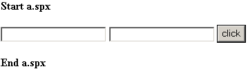
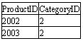
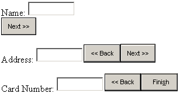
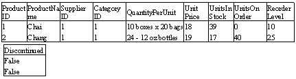
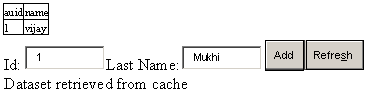
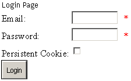

-7-
CGI Programming
This chapter concentrates on the basics
of the Internet. By the time you reach the end of this chapter, you will be
comprehensibly conversant with the role of a web server, a web browser and
ASP.Net. You will also be in a position to appreciate the indispensability of
ASP.Net, in writing powerful business applications.
Understanding the samples
provided by Microsoft, is akin to viewing ASP from a height of 10000 miles.
At the outset, you are required
to create a file called a.cs in the sub-directory c:\inetpub\scripts. We will
explain the relevance of this subdirectory in due course of time.
a.cs
public class zzz
{
public static void Main()
{
System.Console.WriteLine("<b>hi");
}
}
The above is a short and sweet C#
program! Now, compile this program using the csc command, as in ‘csc a.cs’.
Then, run the executable and your
dos screen will simply display 'hi' with the bold tag in front of it.
To run this exe file from our
browser, we key in the following URL in the browser.
http://localhost/scripts/a.exe
This URL seems logical, since we
have placed the file a.exe in the scripts sub-directory. But, we do not seem to
get anything right the first time. This is evident from the following errors
that have been generated:
Output
CGI Error
The specified CGI application misbehaved by not returning a complete set of HTTP headers. The headers it did return are:
hi
The first line indicates that we
have written a CGI application. CGI stands for Common Gateway Interface. And we
have not adhered to the rules pertaining to a CGI application. The web browser
expects a complete set of headers, which we have not provided. Subsequently, we
see 'hi' displayed in bold.
Before moving into the details
about the rules, headers etc. of CGI programming, we shall send a header
across.
a.cs
public class zzz
{
public static void Main()
{
System.Console.WriteLine("Content-Type:text/html");
System.Console.WriteLine("<b>hi");
}
}
We compiled the above program as
before and provided the same URL in the browser. It is preferable to load the
browser again and provide the URL. You could even click on the refresh icon
instead. Whichever method you follow, the same error is generated again.
In future, we will not repeat
these steps, but we do expect you to follow them, so that your output matches
with ours. Writing one more WriteLine function makes no difference at all.
a.cs
public class zzz
{
public static void Main()
{
System.Console.WriteLine("Content-Type:text/html\n");
System.Console.WriteLine("<b>hi");
}
}
Output
hi
The mere inclusion of an 'enter',
represented by '\n', results in elimination of all the errors. We now see the
word 'hi' displayed in bold in our window. Before we explain as to why everything suddenly starts working
fine, let us make a small modification in the above program.
a.cs
public class zzz
{
public static void Main()
{
System.Console.WriteLine("Content-Type:text/plain\n");
System.Console.WriteLine("<b>hi");
}
}
Output
<b>hi
Now, it is time for us to
demystify this mystery.
The web or the HTTP protocol is
very simple to understand if you follow certain rules. When the browser
requests for a file from the web server, depending upon the extension given to
the file, the Web Server does one of the following:
• It picks the file up from its local hard disk and sends it across
OR
• It executes the executable file which has been requested for, from the disk which generates this file and sends it over.
In the case of a file with a .exe
extension, the server executes the file or program on its machine. This program
is not restricted to producing an HTML file only. It can create a file of any
type. If it were restricted to generating only HTML files, it would have made
the web very restrictive.
The contents of every file vary
depending on the file type. For example, an HTML file will contain tags; a .jpg
file will contain images, and so on. The browser must display the files in the
right format, on receiving them.
To inform the browser about the
file coming across, the exe file or program creates a header that signifies the
file type or the content type. A header is nothing but a word that is given
some value and which ends with a colon. Thus, the phrase 'Content-Type' is a
header since it ends in a colon, and the value assigned to it is 'text/plain'.
The rules of CGI state that all
headers must end with an Enter or '\n' symbol. This is so because a file can
have multiple headers. An 'enter' symbol, when placed by itself on a line, signifies
the end of all the headers. It also marks the start of the content. The Web
server is free to add its own headers to the list of headers generated by the
program. This composite data is then transferred to the browser.
Since the headers were not specified
in the first program, an error was generated. The presence of a Content-Type
header in a sense is mandatory for any
file that has to be transferred from the server to the browser.
The second error was reported
because we had omitted the 'enter' symbol all by itself, on a separate line, to
mark the end of all headers. Thus, more headers were expected from the server.
When this did not happen, the browser generated an error. The WriteLine
function adds an 'enter' symbol by default, but an additional \n is required
all by itself, to indicate an end to the Header values.
The browser uses the header named
Content-Type, to determine the type of data sent by the web server.
Accordingly, it displays the file in the right format.
The type text/html refers to a
text file containing html tags. Thus, 'hi' was displayed in bold. However, the
header value of text/plain informs the browser that plain text content is being
sent over, and hence, the tags are not parsed.
a.cs
class zzz
{
public static void Main()
{
string s;
System.Console.WriteLine("Content-Type:text/html\n");
s=System.Environment.GetEnvironmentVariable("PATH");
System.Console.WriteLine(s);
}
}
Output
C:\Program
Files\Microsoft.Net\FrameworkSDK\Bin\;C:\WINNT\Microsoft.NET\Framewor
k\v1.0.2204\;C:\WINNT\system32;C:\WINNT;C:\WINNT\System32\Wbem;C:\Program
Files\Microsoft SQL Server\80\Tools\BINN
An environmental variable is a
word stored by the operating system. In the world of Windows 2000, if we give
the command >set in the dos box, a
list containing a number of words with their corresponding values is displayed.
At the command prompt, if we give
the command >set aa=hi, it creates an environmental variable named 'aa' and
assigns it a value of 'hi' for the current dos session. On issuing the same set
command again, this recently created variable and its value, get displayed
along with the other environmental values.
The namespace System.Environment
has a static function called GetEnvironmentVariable. This function accepts an
environmental variable name and returns its value. In our program, we ask the
function to display the value of the environmental variable named PATH.
These variables are created and
maintained by the operating system. The web server too can ask the operating
system to create some variables, before it executes a program.
a.cs
class zzz {
public static void Main()
{
System.Collections.IDictionary i;
i=System.Environment.GetEnvironmentVariables();
System.Collections.IDictionaryEnumerator d;
d=i.GetEnumerator ();
System.Console.WriteLine("Content-Type:text/html\n");
System.Console.WriteLine(i.Count + "<br>");
while (d.MoveNext())
{
System.Console.WriteLine("{0}={1}<br>",d.Key,d.Value);
}
}
}
The above program shows 46 environmental
variables in the browser. An object named i of datatype IDictionary is defined.
It is initialized to the return value of the static function called
GetEnvironmentVariables.
This function returns an object
that contains all the environmental variables. We need a constant way of
retrieving data that is similar, but which has multiple occurrences. To do so,
the designers of the C# programming language have given us an enumeration
object which enables us to list the multiples values.
We use the GetEnumerator function
from the object 'i', and store its return value in the enumeration object named
'd'. The object named MoveNext iterates through the list of values. The object
contains two members called Key and Value. Basically, the format is Key=Value.
Thus, Key stands for the variable name and Value is the value contained in the
Key.
In the WriteLine function, {0}
displays the first parameter, {1} displays the second variable, and so on. The
Count member of IDictonary returns the count of the environmental variables.
Some of the variables are created
by the Operating System while it starts execution. The others are created by
the IIS WebServer. We searched the world over, but could not find a variable
named Query_String.
This program will be used in the
future. So we want you to make a copy of it and name it as b.exe: >copy a.exe b.exe
a.html
<html>
<body>
<form action=http://localhost/scripts/a.exe>
<input type = text name = aa>
<input type = text name = bb>
<input type = submit value = click>
</form>
</body>
</html>
The above HTML file is placed in
the wwwroot sub-directory and loaded as http://localhost/a.html. This file
shows two textboxes and a button labeled 'Click'. After entering the words 'hi'
and 'bye' in these textboxes, click on the button. You will be surprised to see
the browser displaying the same output as shown in the earlier program. But
observe that the count now displays the number 48, and the address bar now
contains the new URL http://localhost/scripts/a.exe?aa=hi&bb=bye. One of
the newly added name-value pair is :
QUERY_STRING=aa=hi&bb=bye
On receiving the new URL from the
web browser, the server simply creates an environmental variable called
QUERY_STRING and initializes it with the values that are contained in the URL after
the ? symbol. Thereafter, it calls the program named a.exe given in the URL,
from the relevant directory.
The program on the server can
easily identify as to what the user has entered in the textboxes. It simply has
to use the Request class or parse the QUERY_STRING variable.
Cookies
Before taking a leap into this
section, we would like you to set a few options in your browser. First, go to
menu option 'Tools' and select the last option named 'Internet Options'. Select
the Security tab. Ensure that you have selected the ‘Local Intranet’ option and
click on Custom level. Scroll down the list box until you see the heading
'Cookies'. For both the sub options, select the 'Prompt' radio button. The
default is 'Enable'. Restart the browser after making the changes. Now, run the
program given below in your browser.
a.cs
class zzz
{
public static void Main()
{
System.Console.WriteLine("Content-Type:text/html\nSet-Cookie:aa=vijay\n");
System.Console.WriteLine("hi");
}
}
To our utter surprise, we see a
dialog box titled 'Security Alert', asking us whether we would be interested in
saving a temporary file sent by the WebServer on our hard disk. This file is
termed as cookie.
Firstly, we click on the button
labeled 'More Info'. This extends the dialog box to give us more information
about the cookie. Notice that the
cookie is named as aa, and along with other information, it reveals that the
data in this cookie is vijay.
Click on 'yes' and you will see
'hi' in the browser. Subsequently, if you run b.exe in the browser, it will
display all our environmental variables as before. But now, an additional
environmental variable called HTTP_COOKIE is created with the value of
aa=vijay.
Before we go further, let us
first run the following ASP program in the browser using:
http://localhost/a.aspx?aa=hi&bb=bye
a.aspx
<html>
<%@ language="C#" %>
<body>
<%
Request.SaveAs("c:\\z.txt",true);
%>
</body>
</html>
z.txt
GET /a.aspx?aa=hi&bb=bye HTTP/1.1
Connection: Keep-Alive
Accept: image/gif, image/x-xbitmap, image/jpeg, image/pjpeg, application/vnd.ms-powerpoint, application/vnd.ms-excel, application/msword, */*
Accept-Encoding: gzip, deflate
Accept-Language: en-us
Host: localhost
User-Agent: Mozilla/4.0 (compatible; MSIE 5.5; Windows NT 5.0; COM+ 1.0.2204)
For the ones who came in late,
whenever we click on a button of type submit, a new URL is generated. The Web
browser calls on the WebServer again, and sends it a packet of data.
To view the contents of this
packet, the Request property is used. This property returns an HttpRequest
object. SaveAs is one of the functions in the object that takes two parameters:
• The filename in which it can save the request.
• A bool value of true or false. If the value is true, the header is also saved in the file.
Any packet sent by the browser
has two parts to it. It starts with the word GET, followed by the URL that is
to be fetched. The name of the computer, localhost, is removed from the URL, as
the browser connects to it. Following it is the data, as entered in the browser
window.
All this is part of the HTTP
protocol. The protocol states that the URL is to be followed by the http
version number.
When the web server sends data to
the browser, the packet starts with the headers, followed by a blank line, and
finally, followed by the rest of the HTML file. On the other hand, in the
packet sent from the browser, the URL is stated first, followed by the data and
finally, there are the headers. This is exactly the reverse of what happens in
the case of the web server!
At first, we run the executable
from the browser as http://localhost/scripts/a.exe and accept the cookie.
Thereafter, the file a.aspx is copied from c:\inetpub\wwwroot to
c:\inetpub\scripts and loaded as http://localhost/scripts/a.aspx. The file
named z.txt, is shown below.
z.txt
GET /scripts/a.aspx HTTP/1.1
Connection: Keep-Alive
Accept: image/gif, image/x-xbitmap, image/jpeg, image/pjpeg, application/vnd.ms-powerpoint, application/vnd.ms-excel, application/msword, */*
Accept-Encoding: gzip, deflate
Accept-Language: en-us
Cookie: aa=vijay
Host: localhost
User-Agent: Mozilla/4.0 (compatible; MSIE 5.5; Windows NT 5.0; COM+ 1.0.2204)
A cookie has a header named Set-Cookie,
which is sent by the server to the client. A point to be noted here is that the
server initiates a cookie, and not a client.
There is a program that runs on
the server, which directs the server to send a cookie, which has a specific
name and value. When the client browser, which could be Netscape, IE or any
other browser, sees a header named Set-Cookie, it checks for the cookie-option
values. If the prompt is set on, the browser will display a message, thereby,
requesting for permission to accept or reject the cookie.
If the reply is 'yes', then
whenever the client connects to the server, it will contain a header named
Cookie, which it will send to the server. Thus, we see the header Cookie:
aa=vijay in the file z.txt. The text 'Set-' is removed from the Header.
Thus, a cookie is basically a
header-value that is sent by the server, and which is returned by the browser.
These cookies remain in existence
only until the browser is alive. If you close the current copy of the browser
and reload it again with the file a.aspx, the cookie header will not be seen.
System.Console.WriteLine("Content-Type:text/html\nSet-Cookie:aa=vijay; path=/aa\n");
A cookie header, along with the
name-value, has a path that decides on the sub-directories that the cookie can
be sent to. On running a.exe from the scripts sub-directory, the path parameter
in the cookie dialog box shows the path as /scripts/.
Therefore, if you load a.aspx
from the inetpub\wwwroot sub-directory, it will not show the Cookie: header in
the file z.txt. This is because the browser not only stores the domain name or
name of the computer, but also the URL or sub-directories that the cookie
should be sent to. As the path is /scripts, the browser will only send a
Cookie: header to the URLs that access files in the /scripts sub-directory.
Now, we shall see how our cookies
can be made eternal, so that they never say die.
a.cs
class zzz
{
public static void Main()
{
System.Console.WriteLine("Content-Type:text/html\nSet-Cookie:aa=Vijay; expires=Tuesday, 03-04-2002 12:12:23\n ");
System.Console.WriteLine("hi");
}
}
After leaving a space after the
semicolon, we have simply added the word 'expires'. This is initialized to a
date in a certain format, followed by time in hours, minutes and seconds. The
cookie dialog box( that had earlier displayed the Expires as 'end of session),
now displays a specific date.
Upto this date, each time we
connect to a certain path on the server called localhost, the browser will send
this cookie. The earlier cookies were termed as 'session cookies', since their
life span extended only till the end of the session. The cookies where
'expires' is mentioned, are called 'non session cookies'. If we disable the
cookies, the browser does not send the Cookie: header to the server.
Let us now understand the
Response and Request objects in ASP.Net, which are introduced when they are
derived from the Page class.
The Request Object
The property Request in the Page
class, is of type HttpRequest, and it contains code that handles the data sent
by the browser.
This makes it easier for our aspx
program to parse the output sent to us by the browser.
a.aspx
<html>
<%@ language="C#" %>
<body>
<%
String[] s = Request.AcceptTypes;
Response.Write(s.Length.ToString());
for (int i = 0; i < s.Length; i++)
{
Response.Write(s[i] + "<br>");
}
%>
</body>
</html>
Output
8image/gif
image/x-xbitmap
image/jpeg
image/pjpeg
application/vnd.ms-powerpoint
application/vnd.ms-excel
application/msword
*/*
The web server sends the header
Content-Type to signify the type of content that is to follow. The type given
after Content-Type is also called the 'MIME type'. The client, i.e. the browser
too sends across the types it supports, by using a header called Accept.
This header is sent as follows:
Accept: image/gif, image/x-xbitmap, image/jpeg, image/pjpeg, application/vnd.ms-powerpoint, application/vnd.ms-excel, application/msword, */*
Thus, the MIME type starts with
the name of a family, such as image, text, application etc. This is followed by
a slash /, after which we specify the different types within the family. The
symbol */* indicates that the browser supports all MIME types.
The Request object has a property
called AccessTypes, which returns an array of strings. We simply display them
using a 'for' loop. The Length property gives us the number of members present
in the array.
a.aspx
<%@ language="C#" %>
<%
Response.Write(Request.ApplicationPath);
%>
Output
/
The property ApplicationPath
displays the virtual path to the currently running server application. Even if
you copy the file in the scripts sub-directory and change the URL to
http://localhost/scripts/a.aspx, the result will still be a slash i.e. /.
a.aspx
<%@ language="C#" %>
<%
HttpBrowserCapabilities b = Request.Browser;
Response.Write("Type = " + b.Type + "<br>");
Response.Write("Name = " + b.Browser + "<br>");
Response.Write("Version = " + b.Version + "<br>");
Response.Write("Major Version = " + b.MajorVersion + "<br>");
Response.Write("Minor Version = " + b.MinorVersion + "<br>");
Response.Write("Platform = " + b.Platform + "<br>");
Response.Write("Is Beta = " + b.Beta + "<br>");
Response.Write("Is Crawler = " + b.Crawler + "<br>");
Response.Write("Is AOL = " + b.AOL + "<br>");
Response.Write("Is Win16 = " + b.Win16 + "<br>");
Response.Write("Is Win32 = " + b.Win32 + "<br>");
Response.Write("Supports Frames = " + b.Frames + "<br>");
Response.Write("Supports Tables = " + b.Tables + "<br>");
Response.Write("Supports Cookies = " + b.Cookies + "<br>");
Response.Write("Supports VB Script = " + b.VBScript + "<br>");
Response.Write("Supports Java Script = " + b.JavaScript + "<br>");
Response.Write("Supports Java Applets = " + b.JavaApplets + "<br>");
Response.Write("Supports ActiveX Controls = " + b.ActiveXControls + "<br>");
Response.Write("CDF = " + b.CDF + "<br>");
%>
Output
Type = IE5
Name = IE
Version = 5.5
Major Version = 5
Minor Version = 0.5
Platform = WinNT
Is Beta = False
Is Crawler = False
Is AOL = False
Is Win16 = False
Is Win32 = True
Supports Frames = True
Supports Tables = True
Supports Cookies = True
Supports VB Script = True
Supports Java Script = True
Supports Java Applets = True
Supports ActiveX Controls = True
CDF = False
The Browser property in the
Request Object returns an object of type HttpBrowserCapabilities. Thus, an
object b of this type is created and it stores the return value of this
property. We then display all the members of this class, which consist of the features
of the browser that just connected to the server.
Depending upon the values that
are supported and returned by the browser, the aspx file can be made generic,
to enable it to handle the differences among browsers.
The type member returns the name of
the browser along with its version number, whereas, the Browser property
returns only the name. The version number is displayed as 5.5. We can even
display the major and the minor version numbers separately. It is mandatory to
have the Version of the Explorer greater than 5.0, otherwise, the .Net
framework does not reveal the right values.
The property named 'Platform'
informs us about the Operating System that the browser is running on. If the
browser is currently running on Windows 2000, the platform property still
displays the value as WinNT. Our version of IE is the final copy, and not the
beta version, hence, the value of the property named beta is shown as false.
Search engines crawl all over,
looking for websites. Since ours is a simple browser, the property named
IsCrawler is shown as false. America Online is the largest on-line service in
the world and it has its own branded browser. Since we are using IE from
Microsoft, the property named AOL has a value of false.
Earlier, Microsoft had a 16 bit
operating system called Windows 3.1. As we are presently running their 32 bit
Operating system, the property Win16 is false, while the property Win32 is
true. An HTML page is divided into smaller parts by frames. Today, all browsers
support frames. Thus, the Frames property has a value of true.
Earlier some browsers could not
display tables. Thus, the tables property was introduced in the object. Today,
all the browsers fully support tables. However, not every browser can run Java
applets within the browser. In our case, since IE can do so, the JavaApplets
property is true.
All browsers support cookies,
since it is a standard created by Netscape. We have two main client side
scripting languages, VBScript from Microsoft and Javascript from Netscape. Since
our browser supports both, their properties are true. And since ActiveX was
invented by Microsoft, this property also has a value of true.
Finally, if we want to webcast
something, there is a new format called Channel Definition Format or CDF, which
has to be used. For some reason, IE does not support it.
a.aspx
<%@ language="C#" %>
<%
Encoding e = Request.ContentEncoding;
Response.Write(e.EncodingName); %>
Output
Unicode (UTF-8)
The Request.ContentEncoding
property returns an Encoding object. This object also has a large number of
properties and methods. One of them is called EncodingName, which reveals the
Character Set that the browser uses to transfer data to and fro.
a.cs
class zzz
{
public static void Main()
{
System.Console.WriteLine("Content-Type:text/html");
System.Console.WriteLine("Set-Cookie:aa=vijay0; expires=Tuesday, 09-09-2001 12:12:23");
System.Console.WriteLine("Set-Cookie:a1=vijay1; expires=Tuesday, 09-09-2001 12:12:23");
System.Console.WriteLine("Set-Cookie:a2=vijay2; expires=Wednesday, 10-10-2001 12:12:23\n");
System.Console.WriteLine("hi");
}
}
We first loaded the following C#
executable from the script sub-directory:
http://localhost/scripts/a.exe
This sets three cookies for the
browser session, which is currently active.
Then, we ran the aspx program (as
given below) from the scripts sub-directory, using:
http://localhost/scripts/a.aspx
a.aspx
<%@ language="C#" %>
<%
HttpCookieCollection cc;
cc = Request.Cookies;
Response.Write(cc.Count.ToString() + "<br>");
for (int i = 0; i < cc.Count; i++)
{
HttpCookie c = cc[i];
Response.Write(c.Name + "=" + c.Value + "<br>");
}
%>
Output
4
aa=vijay0
a1=vijay1
a2=vijay2
ASP.NET_SessionId=wnyumy5544u3tj55tdrp0u45
Request.Cookies returns an HttpCookieCollection
object that is stored in the object cc. This object named cc has a member named
count, which returns a count of the number of cookies present in the
collection. We have 4 cookies, and hence, the 'for' loop is repeated four
times.
HttpCookieCollection has an
indexer that allows access to the individual cookies. Thus, cc[0] refers to the
first HttpCookie object, and so on. The HttpCookie class in turn, has two
important members, i.e. Name and Value, which display the name of the cookie and
its value, respectively.
a.aspx
<%@ language="C#" %>
<%
HttpCookieCollection cc;
cc = Request.Cookies;
HttpCookie c = cc["a1"];
Response.Write(c.Name + "=" + c.Value + "<br>");
%>
Output
a1=vijay1
The indexer in the HttpCookieCollection
object can also accept a string, which is the name of the cookie. It returns a
cookie object that represents that cookie. The Value member will display the
value contained in the cookie. This will retrieve only a single cookie.
a.aspx
<%@ language="C#" %>
<%
HttpCookieCollection cc;
HttpCookie c;
cc = Request.Cookies;
String[] s = cc.AllKeys;
for (int i = 0; i < s.Length; i++)
{
Response.Write(s[i] + "<br>");
}
for (int i = 0; i < s.Length; i++)
{
c = cc[s[i]];
Response.Write("Cookie: " + c.Name + " ");
Response.Write("Expires: " +c.Expires + " ");
Response.Write ("Secure:" + c.Secure + " ");
String[] s1 = c.Values.AllKeys;
for (int j = 0; j < s1.Length; j++)
{
Response.Write("Value" + j + ": " + s1[j] + "<br>");
}
}
%>
Output
aa
a1
a2
langpref
ASP.NET_SessionId
Cookie: aa Expires: 1/1/0001
12:00:00 AM Secure:False Value0:
Cookie: a1 Expires: 1/1/0001
12:00:00 AM Secure:False Value0:
Cookie: a2 Expires: 1/1/0001
12:00:00 AM Secure:False Value0:
Cookie: langpref Expires: 1/1/0001
12:00:00 AM Secure:False Value0:
Cookie: ASP.NET_SessionId
Expires: 1/1/0001 12:00:00 AM Secure:False Value0:
Just as there are many ways to
skin a cat, there are also numerous ways of displaying a cookie. The
HttpCookiecollection class has a member called AllKeys that returns an array of
strings, which represent the names of the cookies or its keys. Thus, in one
stroke, we can figure out all the names of the cookies.
After displaying the individual
names of the Cookie in the 'for' loop, the same name is used in the indexer, to
access the individual cookie object. The 'expires' property inexplicably, does
not display the correct date and time. Further, the Values object must be used
in place of the Value property, because a cookie can have multiple values.
Thus, c.Values.AllKeys returns an array of strings. Since in the present case,
every cookie has only a single value, the 'for' loop executes only once.
a.aspx
<%@ language="C#" %>
<%
Response.Write(Request.FilePath);
%>
Output
/a.aspx
The property named FilePath
returns the virtual path of the request. The output reflected is /aspx, because we are loading this file from
the wwwroot sub-directory. If you run the file from the scripts sub-directory,
the output will display /scripts/a.aspx
a.aspx
<%@ language="C#" %>
<%
NameValueCollection c;
c=Request.Headers;
String[] s = c.AllKeys;
for (int i = 0; i < s.Length; i++)
{
Response.Write("Key: " + s[i] + " ");
String[] s1=c.GetValues(s[i]);
for (int j = 0; j<s1.Length; j++)
{
Response.Write("Value " + j + ": " + s1[j] + "<br>");
}
}
%>
Output
Key: Connection Value 0: Keep-Alive
Key: Accept Value 0: */*
Key: Accept-Encoding Value 0: gzip, deflate
Key: Accept-Language Value 0: en-us
Key: Cookie Value 0: langpref=C#; ASP.NET_SessionId=abksbkrxdgjmmj45hasiffzx
Key: Host Value 0: localhost
Key: User-Agent Value 0: Mozilla/4.0 (compatible; MSIE 5.5; Windows NT 5.0; .NET CLR 1.0.2914)
The Headers property returns a
NameValueCollection object that represents all the headers. The rules for
handling headers are common for all headers. The rules are all in the form of
name=value. The object c has an AllKeys property, which returns a list of keys.
As before, we use a loop and call the function GetValues, which returns an
array of strings when it is supplied with a key value. Most of the time, we
only have a single value. Hence, our array s1 has a length of one.
a.aspx
<%@ language="C#" %>
<%
NameValueCollection c;
c=Request.Headers;
String[] s = c.AllKeys;
for (int i = 0; i < s.Length; i++)
{
Response.Write("Key: " + c[i] + " ");
String s1=c.Get(s[i]);
String s2=c.Get(i);
Response.Write("Value " + s1 + " " + s2 + "<br>");
}
%>
Output
Key: Keep-Alive Value Keep-Alive Keep-Alive
Key: */* Value */* */*
Key: gzip, deflate Value gzip, deflate gzip, deflate
Key: en-us Value en-us en-us
Key: langpref=C#; ASP.NET_SessionId=abksbkrxdgjmmj45hasiffzx Value langpref=C#; ASP.NET_SessionId=abksbkrxdgjmmj45hasiffzx langpref=C#; ASP.NET_SessionId=abksbkrxdgjmmj45hasiffzx
Key: localhost Value localhost localhost
Key: Mozilla/4.0 (compatible; MSIE 5.5; Windows NT 5.0; .NET CLR 1.0.2914) Value Mozilla/4.0 (compatible; MSIE 5.5; Windows NT 5.0; .NET CLR 1.0.2914) Mozilla/4.0 (compatible; MSIE 5.5; Windows NT 5.0; .NET CLR 1.0.2914)
The output is the same as before,
but it is easier to comprehend now, since a function called Get is used, which
returns a single string value. Every value is displayed twice, because we have
used both the forms of the Get function, i.e. passing it a string and then, passing
it a number. It is the browser that sends these headers. You can easily verify
this by inspecting the file z.txt, which has been created earlier.
Let us first create a simple aspx
file that merely writes out the value of a property called HttpMethod.
a.aspx
<%@ language="C#" %>
<%
Response.Write(Request.HttpMethod);
%>
a.html
<html>
<body>
<form action=http://localhost/a.aspx METHOD=GET>
<input type = text name = aa>
<input type = text name = bb>
<input type = submit value = click>
</form>
</body>
</html>
In the above HTML file, we have
added an attribute called 'METHOD=GET' to the form tag. When we click on the
'click' button, browser screen loads on, with the address containing the action
value of http://localhost/a.aspx, followed by the ? symbol and the name value
pairs. The word GET is also displayed in the browser window.
Now, we make a small modification
in the HTML file. We replace the words GET with POST. When we load the file,
everything remains the same. When we click on the button, the browser now
displays POST. Further, the URL contained in the address bar does not contain
either the question mark or the name-value pairs.
The difference between a GET and
POST method is that, in a POST, the data is transmitted as a separate packet,
whereas, in a GET, it is sent as part of the URL. In Get, there is a limit to
the amount of data that can be sent as part of the URL. Passwords and other
important information must always be sent using the POST method and not the GET
method.
a.aspx
<%@ language="C#" %>
<%
Response.Write(Request.IsAuthenticated + "<br>");
Response.Write(Request.IsSecureConnection + "<br>");
%>
Output
False
False
We have neither authenticated our
connection, nor have we been using a secure connection. A secure connection begins
with 'https', instead of 'http'.
a.aspx
<%@ language="C#" %>
<%
Response.Write(Request.Path);
%>
Output
/a.aspx
This property displays the
virtual path of the current request.
a.aspx
<%@ language="C#" %>
<%
Response.Write(Request.PhysicalApplicationPath);
%>
Output
c:\inetpub\wwwroot\
The Web Server can be installed
anywhere on the hard disk. The default directory selected by IIS is
C:\inetpub\wwwroot. As we have used the defaults, the property PhysicalApplicationPath
reveals the same path. The PhysicalApplicationPath is called the home directory
or the root directory of IIS. Whenever a file is to be referred to on the hard
disk, this value is added to the filename. Further, the slash symbol /, which
represents the virtual directory, finally gets converted into this physical
path, while it is locating or sending files to the browser.
a.aspx
<%@ language="C#" %>
<%
Response.Write(Request.PhysicalPath);
%>
Output
c:\inetpub\wwwroot\a.aspx
In this program, we go a step
further and ask for the full path name or the physical filename of our aspx
file.
For the next program, we write
the following URL in the browser:
http://localhost/a.aspx?aa=hi&bb=bye&aa=no
a.aspx
<%@ language="C#" %>
<%
NameValueCollection c=Request.QueryString;
String[] s = c.AllKeys;
for (int i = 0; i < s.Length; i++)
{
Response.Write(s[i] + " ");
String[] s1 = c.GetValues(s[i]);
for (int j = 0; j < s1.Length; j++)
{
Response.Write("Value " + j + ": " + s1[j] + " ");
}
Response.Write("<br>");
}
%>
Output
aa Value 0: hi Value 1: no
bb Value 0: bye
The QueryString property returns a NameValueCollection. The
AllKeys property of this object returns only two keys, which is because we have
repeated the parameter name aa twice. We are permitted to repeat names in HTML.
The 'for' loop is repeated twice
for the two keys. The GetValues function returns an array consisting of two
members for aa, which is because it contains two values i.e. 'hi' and 'no'. The
second 'for' loop displays these values.
Working with ASP+ is a pleasure,
since there is an inbuilt code for handling multiple values.
If we run the earlier HTML file
with the method as Post, we shall not receive any output, because the environmental
variable QueryString holds values only with the Get method.
a.aspx
<%@ language="C#" %>
<%
Response.Write(Request.RawUrl);
%>
Output
/a.aspx
The RawUrl displays the URL in
its most primitive form.
a.aspx
<%@ language="C#" %>
<%
NameValueCollection c;
c=Request.ServerVariables;
String [] s = c.AllKeys;
for (int i = 0; i < s.Length; i++)
{
Response.Write(s[i] + "=");
String [] s1 =c.GetValues(s[i]);
for (int j = 0; j < s1.Length; j++)
{
Response.Write(s1[j] + " ");
}
Response.Write("<br>");
}
%>
Output
ALL_HTTP=HTTP_CONNECTION:Keep-Alive HTTP_ACCEPT:*/* HTTP_ACCEPT_ENCODING:gzip, deflate HTTP_ACCEPT_LANGUAGE:en-us HTTP_COOKIE:langpref=C#; ASP.NET_SessionId=abksbkrxdgjmmj45hasiffzx HTTP_HOST:localhost HTTP_USER_AGENT:Mozilla/4.0 (compatible; MSIE 5.5; Windows NT 5.0; .NET CLR 1.0.2914)
ALL_RAW=Connection: Keep-Alive Accept: */* Accept-Encoding: gzip, deflate Accept-Language: en-us Cookie: langpref=C#; ASP.NET_SessionId=abksbkrxdgjmmj45hasiffzx Host: localhost User-Agent: Mozilla/4.0 (compatible; MSIE 5.5; Windows NT 5.0; .NET CLR 1.0.2914)
APPL_MD_PATH=/LM/W3SVC/1/ROOT
APPL_PHYSICAL_PATH=c:\inetpub\wwwroot\
CONTENT_LENGTH=0
CONTENT_TYPE=
GATEWAY_INTERFACE=CGI/1.1
HTTPS=off
INSTANCE_ID=1
INSTANCE_META_PATH=/LM/W3SVC/1
LOCAL_ADDR=127.0.0.1
PATH_INFO=/a.aspx
PATH_TRANSLATED=c:\inetpub\wwwroot\a.aspx
QUERY_STRING=
REMOTE_ADDR=127.0.0.1
REMOTE_HOST=127.0.0.1
REQUEST_METHOD=GET
SCRIPT_NAME=/a.aspx
SERVER_NAME=localhost
SERVER_PORT=80
SERVER_PORT_SECURE=0
SERVER_PROTOCOL=HTTP/1.1
SERVER_SOFTWARE=Microsoft-IIS/5.0
URL=/a.aspx
HTTP_CONNECTION=Keep-Alive
HTTP_ACCEPT=*/*
HTTP_ACCEPT_ENCODING=gzip, deflate
HTTP_ACCEPT_LANGUAGE=en-us
HTTP_COOKIE=langpref=C#; ASP.NET_SessionId=abksbkrxdgjmmj45hasiffzx
HTTP_HOST=localhost
HTTP_USER_AGENT=Mozilla/4.0 (compatible; MSIE 5.5; Windows NT 5.0; .NET CLR 1.0.2914)
The server creates a large number
of variables. They are too numerous to be displayed. Here, we are only
displaying the variables that have values.
a.aspx
<%@ language="C#" %>
<%
Uri o = Request.Url;
Response.Write("URL Port: " + o.Port + "<br>");
Response.Write("URL Protocol: " + o.Scheme + "<br>");
Response.Write("URL Host: " + o.Host + "<br>");
Response.Write("URL PathAndQuery: " + o.PathAndQuery + "<br>");
Response.Write("URL Query: " + o.Query + "<br>");
%>
Output
URL Port: 80
URL Protocol: http
URL Host: localhost
URL PathAndQuery: /a.aspx?aa=hi&bb=bye
URL Query: ?aa=hi&bb=bye
The Url property in the Request object,
returns an HttpUrl object. This object has many properties, which break up the
URL into different components. The port number is related to the protocol used.
Every packet on the Internet is
tagged with a number that signifies the protocol that carries it. For e.g., the
http protocol has the port no. 80, E-Mail read is 25, FTP is 21, etc. Thus, the Port shows a value of 80 because
the URL that has been entered, starts with the syntax http:. Similarly, the protocol
used is http.
Host is the name of our computer.
PathAndQuery contains the name of the requested file along with the
querystring.
a.aspx
<%@ language="C#" %>
<%
Response.Write(Request.UserAgent);
%>
Output
Mozilla/4.0 (compatible; MSIE 5.5; Windows NT 5.0; .NET CLR 1.0.2914)
A user agent is another name for
the browser. The internal name for Netscape was Mozilla. So, IE initially
referred to itself by the same name. Many of the websites performed a check on
the browser that was requesting for the file. If it matched IE, the page was not
sent across. However, today it is IE that has eventually won the browser war.
We shall talk about it later, since it is too long an account to be related to
you right away.
a.aspx
<%@ language="C#" %>
<%
Response.Write(Request.UserHostAddress);
%>
Output
127.0.0.1
Every computer on the Internet is
known by a number, which is technically called an IP address. It is of a long
data type. This implies that it consists 4 numbers, each ranging from 0 to 255.
These numbers are separated by dots. This format is known as the decimal dotted
notation.
As every machine is known as
localhost and it is given an IP address 127.0.0.1. Thus, when we write
localhost in the IE address bar, it gets converted to 127.0.0.1.
a.aspx
<%@ language="C#" %>
<%
String[] s = Request.UserLanguages;
for (int i = 0; i < s.Length; i++)
{
Response.Write(s[i] + "<br>");
}
%>
Output
en-us
The property UserLanguages
returns the languages that the browser supports. In our case, the browser
supports the English language, or more precisely, 'en-us', which stands
for American English and not for
British English.
a.aspx
<%@ language="C#" %>
<%
String s = Request.MapPath("/quickstart");
Response.Write(s);
%>
Output
C:\Program Files\Microsoft.Net\FrameworkSDK\Samples\QuickStart
When the .Net sdk installs
itself, it creates virtual directories in IIS. Thus, when we write
http://localhost/quickstart, it converts the virtual directory named quickstart
to the path displayed above. The MapPath function in the Request Object,
converts a virtual directory to an absolute path on your hard disk.
The Response Object
a.aspx
<%@ language="C#" %>
<%
Response.Write(Response.BufferOutput.ToString());
%>
Output
True
The first property we delve upon
in the HttpResponse class is BufferOutput. This property returns a logical
value of either a True or False. In doing so, it keeps us posted on whether the output sent to the browser
will be buffered or not.
While using the Write function
from the Response class, the data doesn't have to be sent to the browser at
once, as this will result in too many small packets being sent across.
Therefore, on grounds of efficiency, the text is collected and sent only when a
critical mass is reached. By default, the buffering option is on. Unless you
are equipped with a valid reason, you should not turn it off.
a.aspx
<%@ language="C#" %>
<%
Response.ContentType = "Text/plain";
Response.Write("<b>hi");
%>
Output
<b> hi
The web server sends a series of headers
to the browser. It then follows it up with the actual content. As explained to
you earlier, the most important header is Content-Type. If we avoid creating
this header in our file, IIS defaults to the type value as text/html.
Here, we have changed the
Content-Type property in Response to text/plain. Thus, the <b> tag is
treated as text and not a HTML tag.
a.aspx
<%@ language="C#" %>
<%
Response.Write(Response.IsClientConnected.ToString());
%>
Output
True
This function simply returns true
or false, depending on whether the client is connected or not. This is one
check that is to be performed before we send the file to the browser.
a.aspx
<%@ language="C#" %>
<%
System.IO.FileStream f;
long s;
f = new System.IO.FileStream("c:\\inetpub\\wwwroot\\a.html", System.IO.FileMode.Open);
byte[] b = new byte[(int)f.Length];
f.Read(b, 0, (int)f.Length);
Response.Write("<b>Start a.spx</b>");
Response.BinaryWrite(b);
Response.Write("<b>End a.spx</b>");
%>
Output

In the System.IO namespace, there
is a class called FileStream, which has members that can handle file activity.
While creating an object 'f' in the constructor, we state the full path of the
file and also the mode in which the file is to be opened. We then allocate a
byte array, depending upon the size of the file. The file size is acquired
using the property called Length in the FileStream object.
The read function is employed
next, to read the file into the byte buffer. Therefore, the first parameter
specified is 'b'. The second parameter is the starting position in the file,
the position from where the reading should begin. And the last parameter is the
number of bytes to be read, from thereon. As we want to read from the beginning
of the file, and we also want to read the entire file in one go, we specify
zero as the second parameter and the length of the file is the third parameter.
Now that the file is available in
the byte array, the BinaryWriter function is used to add these bytes into a
stream and subsequently, send them to the browser. As the browser receives an
HTML file, it parses through the file and displays the textboxes. The Write
functions before and after the BinaryWrite, work as normal.
a.aspx
<%@ language="C#" %>
<%
Response.Write("<b>Start");
Response.ContentType = "Text/plain";
Response.Clear();
Response.Write("<b>End");
%>
Output
<b>End
The Response.ContentType function
initially changes the Content-Type header after writing Start in bold.
Thereafter, the Clear function in Response, clears all HTML output, since its
job is to clear the Buffer. So, the output displayed in the browser is that of
the final Write. Even though the documentation states that headers are reset,
it does not happen in the case of our copy.
a.aspx
<%@ language="C#" %>
<%
Response.Write("<b>Start");
Response.ContentType = "Text/plain";
Response.ClearHeaders();
Response.Write("<b>End");
%>
Output
StartEnd
However, the function
ClearHeaders, resets all the headers created in the scriptlet. Thus, the
default Content-type header is sent across, before the contents in the buffer
are handed over to the browser. As a result, we see StartEnd displayed in bold.
a.aspx
<%@ language="C#" %>
<%
Response.Write("<b>Start");
Response.End();
Response.Write("<b>End");
%>
Output
Start
The End function states 'enough
is enough', and it sends across the HTML file and the headers immediately.
Thereafter, it closes the connection. Thus, all future output to be sent to the
browser, is conveniently ignored.
a.aspx
<%@ language="C#" %>
<%
Response.Write("<b>Start");
Response.Redirect("a1.aspx");
Response.Write("<b>End");
%>
a1.aspx
<%@ language="C#" %>
<%
Response.Write("<b>a1.aspx");
%>
Output
a1.aspx
The redirect function merely
stops executing the current file, a.aspx, and starts executing the file to
which it has been redirected. Thus, in case of a Redirect function, any Write
function that follows the Redirect command, is completely ignored. Also, if you
observe the address bar, the URL does not change in the browser. It remaines as
a.aspx.
a.aspx
<%@ language="C#" %>
<%
Response.Write("a.aspx <br>");
Response.WriteFile("a.html");
%>
The output is similar to one of
the earlier programs. The WriteFile function writes the file contents into the
http stream and sends it to the browser.
Cookies Revisited
a.aspx
<%@ language="C#" %>
<%
HttpCookie c = new HttpCookie("vijay","mukhi");
Response.AppendCookie(c);
%>
One of the simplest things to do
in ASP+, is to send a cookie across. Object 'c' of type HttpCookie is created
by calling the constructor with the name of the cookie vijay, having a value of
mukhi.
Since the cookie option has been
set to prompt in the browser, you will see Alert box for the cookie. Please
note that the constructor does not send the cookie across. It is the function
AppendCookie that does so.
a.aspx
<%@ language="C#" %>
<%
HttpCookie c = new HttpCookie("vijay","mukhi");
Response.AppendCookie(c);
HttpCookie c1 = new HttpCookie("vijay1","mukhi1");
Response.AppendCookie(c1);
c = new HttpCookie("vijay1","mukhi2");
Response.AppendCookie(c);
%>
By default, the browser sends a
cookie for the ASP+ session. In the above program, even though three cookies
have been sent, we see only two boxes, since the second and the third cookies
share the same name. Thus, the cookie with the names of vijay1 and value mukhi2
is not sent across separately. The point to be considered here is that you are
free to send as many cookies as you like.
a.aspx
<%@ language="C#" %>
<%
HttpCookie c = new HttpCookie("vijay");
c.Values.Add("sonal","wife");
c.Values.Add("zzz","yyy");
Response.AppendCookie(c);
%>
Output
Value in cookie dialog box
sonal=wife&zzz=yyy
a1.aspx
<%@ language="C#" %>
<%
HttpCookieCollection cc;
HttpCookie c;
cc = Request.Cookies;
int i = cc.Count;
for (int k = 0; k < i; k++)
{
c = cc[k];
Response.Write("Cookie: " + c.Name + "<br>");
String[] s1 = c.Values.AllKeys;
for (int j = 0; j < s1.Length; j++)
{
Response.Write("Value" + j + ": " + s1[j] + "<br>");
}
}
%>
Output
Cookie: vijay
Value0: sonal
Value1: zzz
Cookie: ASP.NET_SessionId
Value0:
Cookies can be made as complex as
we like. We create one cookie named vijay, and then use the Add function in the
Values property of the cookie, to initialize the subnames and values for the
cookie.
The cookie is transferred as one entity,
with the key-value pairs within it. The different pairs are separated by a
& sign. a1.aspx simply displays all the cookies. For a cookie named vijay,
the last 'for' loop gets executed twice as it holds two values.
a1.aspx
<%@ language="C#" %>
<%
HttpCookieCollection cc;
HttpCookie c;
cc = Request.Cookies;
c = cc["vijay"];
Response.Write("Cookie: " + c.Name + "<br>");
Response.Write(c.Values["sonal"] + "<br>");
Response.Write(c.Values["zzz"]);
%>
Output
Cookie: vijay
wife
yyy
Rewrite a1.aspx with the code
given above. This program first fetches the cookie named vijay and stores it in
'c'. The Values property, which returns a NameValueCollection, has an indexer
that is supplied with the name of the sub key. Consequently, this indexer
returns the value of the sub key.
a.aspx
<html>
Sonal Mukhi
<a href="a1.aspx">Click here</a>
</html>
a1.aspx
<html>
<script language="C#" runat="server">
void Page_Load(Object sender, EventArgs E)
{
if (!IsPostBack) {
Response.Write(Request.Headers["Referer"]);
ViewState["zzz"] = Request.Headers["Referer"];
}
}
void abc(Object sender, EventArgs E) {
Response.Redirect(ViewState["zzz"].ToString());
}
</script>
<form runat="server">
<input type="submit" OnServerClick="abc" Value="Click" runat="server"/>
</form>
</body>
</html>
Output
Sonal Mukhi Click here
http://localhost/a.aspx
The file a.aspx has an anchor tag
<a href…> that takes us to page a1.aspx, whenever we click on it.
The ASP+ program a1.aspx displays
a button with the label 'click'. Prior to this, the function Page_Load is
called. This function uses the Request object to access the indexer called
Header. The Header is passed a string called Referer, which informs it about
the file of its origin. As a.aspx was responsible for leading us to a1.aspx
from a.aspx, the URL displays the file name a.aspx.
The WebServer normally keeps a log
of the files that lead a user to its site. This value is then stored in a state
variable called zzz. As we are now aware of the site that brought us to the
current one, by clicking on the button, we can Redirect ourselves to the page
we came from.
Thus, the above code is generic
and goes into a circular loop.
We shall now consider a practical
example to demonstrate the utility of cookies.
a.aspx
<html>
<script language="C#" runat="server">
void Page_Load(Object sender, EventArgs E)
{
if (Request.Cookies["vijay"] == null)
{
HttpCookie c = new HttpCookie("vijay");
c.Values.Add("Size","8pt");
c.Values.Add("Name","Verdana");
Response.AppendCookie(c);
}
}
public String abc(String k)
{
HttpCookie c = Request.Cookies["vijay"];
if (c != null)
{
if ( k == "FontSize")
return c.Values["Size"];
else
return c.Values["Name"];
}
return "";
}
</script>
<style>
body
{
font: <%=abc("FontSize")%> <%=abc("FontName")%>
}
</style>
Sonal Mukhi
<a href="a1.aspx">Click here</a>
</body>
</html>
a1.aspx
<html>
<script language="C#" runat="server">
void Page_Load(Object sender, EventArgs E)
{
if (!IsPostBack)
ViewState["zzz"] = Request.Headers["Referer"];
}
void abc(Object sender, EventArgs E)
{
HttpCookie c = new HttpCookie("vijay");
c.Values.Add("Size",s1.Value);
c.Values.Add("Name",s2.Value);
Response.AppendCookie(c);
Response.Redirect(ViewState["zzz"].ToString());
}
</script>
<form runat="server">
<select id="s1" runat="server">
<option>8pt</option>
<option>10pt</option>
<option>12pt</option>
<option>44pt</option>
</select>
<select id="s2" runat="server">
<option>verdana</option>
<option>tahoma</option>
<option>arial</option>
<option>times</option>
</select>
<input type="submit" OnServerClick="abc" Value="Click" runat="server"/>
</form>
</body>
</html>
Output
Sonal Mukhi Click here
Sonal Mukhi
Click here
The above example displays the
text 'Sonal Mukhi' and a hyperlink labelled as 'Click Here'. If we click on the
hyper link, we are transported to a new page called a1.aspx. This page contains two dropdown listboxes
and a button. The first listbox displays the font point size and the second
offers the font face name. By default, the values in these text boxes are 8pt
for the font size and Verdana for the font face name, respectively. At this
stage, if you modify the font size to 12 and the font face name to Tahoma, and
then click on the button, you will be taken back to the original file named
a.aspx. In this file, the text and the Hyperlink will now be displayed in the
newly selected font and size.
Having unravelled the output, let
us now shift the spot-light to the internal working of this program.
The Page_Load function in a.aspx
verifies the existence of a cookie named 'vijay'. Since this page has just been
loaded afresh, the cookie is not available at the moment. This condition
results in true only when the client returns the cookie sent by the server,
while transmitting the user data.
Since the Cookies collection
returns a null, a cookie named 'vijay' is created with two sub keys of Size and
Name. These sub keys are given the values of 8 pt and Verdana, respectively,
which correspond to the font size and the font face name. This cookie is sent
over along with the page generated by a.aspx.
The code enclosed within the
style and /style tags calls the function abc, to adjust the font size and name
as specified by the cookie. Since 'c' has not been currently initialized, the
current text is not displayed in the font and the size specified in the cookie.
Depending upon the value of the parameter 'k', the value of the key Size or
Name, as specified in the Cookie 'Vijay', will be put into service. Thus, the
keys in the cookie named 'Vijay' will decide the format of the text displayed
on the page.
If we click on the hyper-link, it
will result in a call to a1.aspx. By using the Referer parameter in the
Header's Indexer, the name a.aspx of the aspx file is stored in the state
variable named zzz. When the user clicks on the button, the font name and font
size selected by the user, get stored in the listbox ids of s1 and s2
respectively.
This results in a call to the
code in the function abc, where a cookie called 'Vijay' is created. Its sub
keys are initialized to values obtained from the listbox. This cookie is sent
over. Thereafter, using the state variable zzz, we revert back to a.aspx.
In the file a.aspx, since the
cookie 'vijay' now contains specific values, we use these values to set the
font size and the name. As a consequence, the text is displayed in accordance
with the values selected by the user in the listbox, which are now accessible
from the cookie. Thus, we can conclude that the system takes into account the
choices that we make, and each time we load the file a.aspx, the text displayed
on the page is formatted as per the pre-selected font face and size.
This is the mechanism to display
a customized web page. Since by default the page does not retain these values
when the browser is closed, the 'expires' attribute has to be initialized to a
value specified in terms of time or a date. This indicates the duration for
which the cookie is to remain alive. Alternatively, we can store such a value
in DateTime.MaxValue, so that the cookie never expires.
You can verify the retention of
pre-set values between different browser sessions by closing the browser and
re-starting it. The browser would have
retained the settings specified by you earlier.
Cookies are employed to enable
data to persist between the client and the server. A cookie is usually stored
on the Client’s hard disk. In the case of Netscape Navigator, a file called
cookies.txt is created by the browser to store the cookies. The minimum size
per cookie is 4096 bytes.
State Management with Global.asax
a.aspx
<html>
<script language="C#" runat="server">
int p1=0;
void Page_Load(Object sender, EventArgs e)
{
p1++;
Response.Write("Page_Load() " + p1.ToString() + "<br>");
}
void abc(Object sender, EventArgs e)
{
Session.Abandon();
//Response.Redirect("a.aspx");
}
</script>
<body>
<form runat="server">
<input type="submit" Value="Refresh" runat="server"/>
<input type="submit" OnServerClick="abc" Value="End Session" runat="server"/>
</form>
</body>
</html>
global.asax
<script language="C#" runat="server">
int r1 =0, r2=0, s1=0,s2=0,a1=0,a2=0;
void Application_Start(Object sender, EventArgs E)
{
a1++;
}
void Application_End(Object sender, EventArgs E)
{
a2++;
}
void Session_Start(Object sender, EventArgs E)
{
s1++;
Response.Write("Session_Start " + s1.ToString()+ "<br>");
}
void Session_End(Object sender, EventArgs E)
{
s2++;
Response.Write("Session_End " + s2.ToString()+ "<br>");
}
void Application_BeginRequest (Object sender, EventArgs E)
{
r1++;
Response.Write("Request_Start " + r1.ToString()+ " Application start " + a1.ToString() + "<br>");
}
void Application_EndRequest (Object sender, EventArgs E)
{
r2++;
Response.Write("Request_End "+ r2.ToString()+ " Application end " + a2.ToString() + "<br>");
}
</script>
Output
Request_Start 1 Application start 0
Session_Start 1
Page_Load() 1
Request_End 1 Application end 0
In the above program, we have
created two files in the directory c:\inetpub\wwwroot. The file a.aspx can be
christened by any name of our choice, but the second file must be named as
global.asax. Prior to loading a.aspx in the browser, ASP.Net checks for the
presence of a file named global.asax. If it exists in the current directory, a
DLL is created with a class called global.asax. This class holds all the code
entered in the asax file. The class resembles the following:
public class global_asax : System.Web.HttpApplication , System.Web.SessionState.IRequiresSessionState {
We discovered this by consciously
committing an error in C#.
There are six functions with pre-defined
names that are added to global.asax. They are:
• Application_Start
• Application_End
• Session_Start
• Session_End
• Application_BeginRequest
• Application_EndRequest
We have also created six
different variables in this special file and initialized all of them to 0. Each
of these six functions increments one variable each by a value of 1. This
signifies the frequency with which the functions get called. A similar action
is repeated in the Page_Load function within the aspx file.
When we load the file a.aspx, it
calls some functions from the file global.asax. But, each of them gets called
only once. The order is as follows: Application_BeginRequest, Session_Start,
Page_Load.
Thereafter, the buttons in the
aspx file are displayed. Lastly, Application_EndRequest is displayed on the
screen.
Please note that there is no
Write function in Application_Start and Application_End, because the Response
object is neither available, nor has it been created so far. By adding a
function, an error is generated, that gives us information about the
global_asax class in the dll.
When we click on Refresh, no code
gets called, because it simply results in a post back to the server.
Output
Request_Start 2 Application start 0
Page_Load() 1
Request_End 2 Application end 0
The order of calling the various
functions is as follows:
• First, function Application_BeginRequest with variable r1 as 2,
• Then, function Page_Load with variable p1 as 1
• Finally, function Request_End with variable r2 as 2.
The output proves that the
Page_Load function is not called on clicking on the refresh button. Also, no
new session is created. Hence, the Session_Start function is not called.
Now, if you click repeatedly on
the 'End Session' button, you will see the following output:
Output
Request_Start 10 Application start 0
Session_Start 8
Page_Load() 1
Request_End 10 Application end 0
The Session_Start function is
called once and the Request_Start is called twice.
If we comment out the
Response.Redirect function in the file a.aspx, we obtain the same number of
functions as before, but the Request functions get called only once. What we
are trying to convey here is that, generous amount of code gets called before
and after Page_Load. We can take advantage of these functions and the frequency
of their occurrence to execute certain code at specified intervals.
For the moment, the code in
global.asax does not deal with User Interface calls. These calls handle a much
higher level of event handling, where it deals with application events. We can
create our own events in the form of Application_EventName(signature).
We would also like to clarify
that the file, global.asax, need not be restricted to the wwwroot sub-directory
alone. The only salient feature to be kept in mind is that it should be placed
in the same sub-directory as the aspx file.
The .Net framework creates a
class derived from HttpApplication and places our code in it. Any modifications
made to these files automatically calls for recompiling of the class. We cannot
use a direct URL request to fetch the file, since we are not permitted to view
the code written in it.
If you consider yourself to be a maverick,
you may attempt to do so. But beware, you will then have to deal with the error
number 404.
a.aspx
<html>
<script language="C#" runat="server">
void abc(Object sender, EventArgs e)
{
throw new Exception();
}
</script>
<body>
<form runat="server">
<input type="submit" OnServerClick="abc" Value="Exception" runat="server"/>
</form>
</body>
</html>
Output
In the above program, An
exception of type System.Exception was thrown. The above program is extremely
simple. It displays a button labelled 'Exception'. If we click on this button,
an exception is thrown.
An exception is a synonym for an
error. The class, when derived from exception, becomes an exception class.
Functions in today's world throw exceptions rather than errors. We get an ugly
yellow coloured screen containing the exception message.
Now, let us endeavour to execute
our own code, whenever an exception is thrown.
We first create a file called
web.config in c:\inetpub\wwwroot as follows:
web.config
<configuration>
<system.web>
<customErrors mode="On" defaultRedirect="a.htm" />
</system.web>
</configuration>
a.htm
hi
This file, which is used to
customize the default workings of ASP.Net, is read each time by the ASP+
framework. By giving the above tags in the file, we can direct the framework to
load a file named a.htm, whenever an error occurs. The URL, however, changes to
the following in the browser address bar:
http://localhost/a.htm?aspxerrorpath=/a.aspx
a.aspx
<%@ Import Namespace="System.Data" %>
<html>
<script language="C#" runat="server">
void Page_Load(Object Src, EventArgs E )
{
DataView s = (DataView)(Application["sss"]);
s1.InnerHtml = s.Table.TableName;
l.DataSource = s;
l.DataBind();
}
</script>
<body>
<span runat="server" id="s1"/></font>
<ASP:DataGrid id="l" runat="server"/>
</body>
</html>
global.asax
<%@ Import Namespace="System.Data" %>
<%@ Import Namespace="System.IO" %>
<script language="C#" runat="server">
void Application_Start(Object sender, EventArgs e)
{
DataSet d = new DataSet();
FileStream f = new FileStream(Server.MapPath("s.xml"),FileMode.Open,FileAccess.Read);
StreamReader r = new StreamReader(f);
d.ReadXml(r);
f.Close();
DataView v = new DataView(d.Tables[0]);
Application["sss"] = v;
}
</script>
s.xml
<root>
<schema id="DocumentElement" targetNamespace="" xmlns="http://www.w3.org/2001/XMLSchema" xmlns:xdo="urn:schemas-microsoft-com:xml-xdo" xdo:DataSetName="DocumentElement">
<element name="Products">
<complexType>
<all>
<element name="ProductID" type="int"></element>
<element name="CategoryID" minOccurs="0" type="int"></element>
</all>
</complexType>
</element>
</schema>
<DocumentElement>
<Products>
<ProductID>2002</ProductID>
<CategoryID>2</CategoryID>
</Products>
<Products>
<ProductID>2003</ProductID>
<CategoryID>2</CategoryID>
</Products>
</DocumentElement>
</root>
Output
Products

In the file a.aspx, we begin with
the assumption that a DataView object has already been created. Then, we
initialize a span member named InnerHtml to a Table name that is picked up from
the DataView.
This explains the display of
Products in the browser window. Then, the DataSource property of the DataGrid
named l, is initialized to the DataView object named 's'.
Finally, the function DataBind display the records in a Tabular format.
Now, let us cover up the
loopholes in the explanation of the above program.
In the global.asax file, we have
added adequate amount of code in the Application_Start function. A DataSet
object named 'd' is created to hold the data. Also, a FileStream object named
'f' is given a reference to an XML file named s.xml, which is opened for
reading purpose only. The file s.xml resides in the same directory. The
StreamReader object named 'r' is given the FileStream parameter in its
constructor, to enable it to read this file. d.Readxml will finally read the
contents of the xml file in its dataset. We are not going into the explanation
of s.xml, since it remains the same as
before.
After closing the file, a
DataView object 'v' is created. Application variables are similar to State
variables, in the sense that, they are valid only while the application is on.
The Application is an indexer. Hence, we provide a string named 'sss' to hold
the DataView object. The variable 'sss' is now an Application variable.
The Application variable sss,
containing the DataView object, is used in the Page_Load function. It supplies
the data contained in the DataSet. The functions Page_Load and
Application_Start are called only once, i.e. when the page is initially loaded.
Both perform one-time actions. Thus, all resource intensive actions, such as,
initializing the DataView, which is a one-time effort, are placed in this
function.
There can always be a situation
where multiple threads would like to access both, an application and its
objects, concurrently. So, the data that does not change very often, must be
stored with an Application scope. Data that needs to be initialized just once
and then it is required to be only read, is an ideal example of such data.
In the above example, only the
first request is resource intensive, and will incur a performance overhead
while creating the DataView. All the other requests will be executed at
lightning speed.
Sessions
a.aspx
<html>
<script language="C#" runat="server">
String abc(String k)
{
return Session[k].ToString();
}
</script>
<style>
body
{
font: <%=abc("Size")%> <%=abc("Name")%>
}
</style>
Sonal Mukhi
<a href="a1.aspx">Click here</a>
</body>
</html>
a1.aspx
<html>
<script language="C#" runat="server">
void Page_Load(Object sender, EventArgs E)
{
if (!Page.IsPostBack)
ViewState["zzz"] = Request.Headers["Referer"];
}
void abc(Object sender, EventArgs E)
{
Session["Size"] = s1.Value;
Session["Name"] = s2.Value;
Response.Redirect(ViewState["zzz"].ToString());
}
</script>
<body>
<form runat="server">
<select id="s1" runat="server">
<option>8pt</option>
<option>10pt</option>
<option>12pt</option>
<option>44pt</option>
</select>
<select id="s2" runat="server">
<option>verdana</option>
<option>tahoma</option>
<option>arial</option>
<option>times</option>
</select>
<input type="submit" OnServerClick="abc" Value="Click" runat="server"/>
</form>
</body>
</html>
global.asax
<script language="C#" runat="server">
void Session_Start(Object sender, EventArgs e)
{
Session["Size"] = "8pt";
Session["Name"] = "verdana";
}
</script>
The above example conducts itself
in the same manner as the earlier Cookies' example. However, this one is much
simpler. It is next to impossible for the user to detect the method used to
obtain the above output by merely looking at the end result.
Let us start with the file named
a.aspx.
The code in a.aspx remains the
same, except for modifications made in the function abc. The Session indexer is
used to retrieve the value of a variable that is created in the global.asax
file. In the global.asax file, we have created two variables named Size and
Name to store the font size and the font name respectively. You may have
noticed that this code is placed in the function named Session_Start.
When we click on the button in
the file a1.aspx, the Sessions variables get re-initialized with the values
selected in the listboxes. Thereafter, there is a redirection to the original
page named a.aspx.
If we replace Cookies with
Session, the entire picture would be more transparent and lucid.
We can configure the state of the
session object by using the sessionstate section in the file named web.config.
Adding the line <sessionState timeout="40" /> will increase the
default timeout from 20 minutes to 40 minutes. The timeout parameter ends the
session either in 40 minutes or when you close the browser, whichever occurs
first.
We now add the following line to
the file named web.config
web.config
<configuration>
<system.web>
<sessionState cookieless="true" />
</system.web>
</configuration>
We have selected the cookie
option named 'prompt', and in config.web, we have disallowed the use of a cookie
to keep track of sessions. Thus, the web server has no choice but to use the
URL to keep track of sessions. As a result, the new URL looks like the
following:
http://localhost/(ybp3byicimzjix3s0veyjb55)/a.aspx
This method is termed as URL
rewriting.
ViewState
The illustration given below may
be a large program, but it is deceptively simple to understand.
a.aspx
<html>
<script language="C#" runat="server">
void Page_Load(Object Src, EventArgs E )
{
if (!IsPostBack)
ViewState["zzz"] = 0;
}
void a1(Object Src, EventArgs E )
{
String pid = "P" + ViewState["zzz"].ToString();
ViewState["zzz"] = (int)ViewState["zzz"] + 1;
String Id = "P" + ViewState["zzz"].ToString();
Panel p = (Panel)FindControl(Id);
p.Visible=true;
p = (Panel)FindControl(pid);
p.Visible=false;
}
void a2(Object Src, EventArgs E )
{
String Id = "P" + ViewState["zzz"].ToString();
ViewState["zzz"] = (int)ViewState["zzz"] - 1;
String pid = "P" + ViewState["zzz"].ToString();
Panel p = (Panel)FindControl(Id);
p.Visible=false;
p = (Panel)FindControl(pid);
p.Visible=true;
}
void a3(Object Src, EventArgs E )
{
String s = "P" + ViewState["zzz"].ToString();
Panel p = (Panel)FindControl(s);
p.Visible=false;
l.Text += "Name: " + na.Value + "<br>";
l.Text += "Address: " + a.Value + "<br>";
l.Text += "Card : " + n.Value + "<br>";
}
</script>
<body">
<form runat="server">
<ASP:Panel id="P0" Visible="true" runat="server">
Name:
<input id="na" type="text" runat="server">
<br>
<input type="submit" Value=" Next >> " OnServerClick="a1" runat="server">
</ASP:Panel>
<ASP:Panel id="P1" Visible="false" runat="server">
Address:
<input id="a" type="text" runat="server">
<input type="submit" Value=" << Back " OnServerClick="a2" runat="server">
<input type="submit" Value=" Next >> " OnServerClick="a1" runat="server">
</ASP:Panel>
<ASP:Panel id="P2" Visible="false" runat="server">
Card Number:
<input id="n" type="text" runat="server"/>
<input type="submit" Value=" << Back " OnServerClick="a2" runat="server">
<input type="submit" Value=" Finish " OnServerClick="a3" runat="server">
</ASP:Panel>
</form>
<asp:Label id="l" runat="server"/>
</body> </html>
Output

We start our explanation with the
code following the script tag, where we have three predefined Panel controls
having the ids P0, P1 and P2. A Panel tag is simply a container for other HTML
controls.
The Visible property for the
first panel is set to true, whereas, for the other two, it is set to false.
Thus, only the first panel P0 is displayed, and not the others.
The first panel contains a
TextBox called 'na' and a button of type submit and label 'Next >>',
which calls the function a1 when it is clicked.
The Page_Load function creates a
ViewState variable named zzz and assigns it a value of 0. In a1, pid is
assigned a value after concatenating "P" to the string value returned
by ViewState["zzz"]. The statement ViewState["zzz"] =
(int)ViewState["zzz"] + 1; increases the value by 1, thereby, making
it 1.
A new string is then created with
this new value of zzz. Thus, the value in the variable id becomes P1. The
function FindControl, when supplied with the name of the control, returns a
control. We cast it to a Panel, because we want to store this value in a Panel
object named 'p'. The Panel object 'p' currently represents the hidden Panel
P1.
We change the visible property of
p, i.e. Panel P1, to true. As a result, the second panel is displayed on the
screen. Subsequently, we use the same function named FindControl to find the
Panel P0 and to change its Visible property to false. Thus, the only panel that
is displayed at this stage is P1.
The second panel contains one textbox
and two buttons. The button labeled 'Next >>' calls the function a1,
whereas, the one labeled '<< Back' calls the function a2. The function a1
increments the value of zzz by 1, thereby, taking us to the next panel. On the
other hand the function a2 decreases the value of zzz by 1, thereby, taking us
to the previous panel. Accordingly, the current panel is hidden and the new
panel is made visible.
In the last panel P3, the
function a3 gets called by the button labeled 'Finish'. This function simply displays
the values of the textboxes in the label field.
The user is given the impression
that he is moving from one page to the other, but in reality, a single aspx
file is executing certain sections of its code.
The property named ViewState is
an instance of the StateBag class, which gives us a dictionary like interface.
It stores objects associated with a key.
Create the b.cs file in the
c:\inetpub\wwwroot\bin sub directory.
b.cs
using System.Web;
namespace nnn
{
public class zzz : IHttpHandler
{
public void ProcessRequest(HttpContext c) {
c.Response.Write("Hell");
}
public bool IsReusable {
get {
return true;
}
}
}
}
Compile b.cs as
>csc /target:library /out:c.dll b.cs /R:system.web.dll
Create a file by the name of web.config
in c:\inetpub\wwwroot to appear as depicted below:
web.config
<configuration>
<system.web>
<httpHandlers>
<add verb="*" path="a1.aspx" type="nnn.zzz,c" />
</httpHandlers>
</system.web>
</configuration>
Now, load the following URL in
the browser http://localhost/a1.aspx
Output
Hell
We first create a simple program
named b.cs in the c:\inetpub\wwwroot\bin sub-directory. The class zzz in this
file is derived from the interface IhttpHandler. It contains only two functions
named ProcessRequest and IsReusable.
The IsReusable function is called
to find out whether the same instance of the class can be recycled and used for
another request, or if a fresh instance of the object needs to be created.
Since the function returns true, the same object is used.
The ProcessRequest function
creates the HTML output that is to be sent across to the browser. It accepts an
object 'c' of type HttpContext as a parameter. This object has a function
called Write, which helps the browser in writing output to the screen. Hence,
we see 'Hell' displayed in the browser window.
What if we want to call our own
function, instead of the ones supplied by IIS, when we are working on certain
files?
To synchronously process HTTP web
requests, the first requirement is that, the class must derive from
IHttpHandler. This interface must be implemented, because it defines a contract
and allows custom URL execution.
ASP.Net provides us with a
low-level request and response API (a set of rules), which uses classes in
order to service incoming requests. Thus, the above program is called a
handler. Handlers are used when we want to customize certain features if we are
not satisfied with the methods adopted by the framework that handles web
requests.
The interface IHttpHandlerFactory
decides on the class that will handle the http request. ASP.Net is shipped with
three factory classes that handle requests. These are:
• PageHandlerFactory
• RestrictedResourceFactory
• WebServiceHandlerFactory
We can either use any one of
these three classes or create our own set of classes. If we create our own
classes, we have to register them with the framework and handle the resolution
issues.
To change the default behaviour
in the .Net world, code has to be placed in the config.web file. This is a
plain and simple text file, which follows the rules of XML. This file has to be
placed in the inetpub\wwwroot sub-directory or the directory of your
application.
We can place our options within a
tag called <configuration>. Following this, we have to initially place a
tag called system.web which will
contain another tag called <httpHandlers>. This tag accepts the name of a
file or a file pattern. This pattern calls our handler when the value assigned
to the property called path, is invoked. HttpHandler also requires the type
attribute containing the namespace name and the class to handle the request.
The name of the dll is also to be specified with the type. Thus, we use a comma
as a separator, and then give 'c'. The c.dll must be present in the bin sub-directory.
These settings are inherited by sub-directories also, implying that the
sub-directories are also checked for controls, handlers etc.
Each time we request for a file
named a1.aspx, the request for this particular file is not processed by the web
server. Instead, it is handed over to our class named zzz. The class zzz then
decides on the data to be sent over, under the file name of a1.aspx
Thus, handlers and factories are
the backbone of the framework, because we are at liberty to decide on how the
HTTP request should be handled. The factory picks up the request and decides on
the handler that is to be called. These handlers are available in the
web.config file. The code for the handlers normally resides in the bin
sub-directory. Since the file is placed in the default root directory, it is
picked up by default, hence we request you to delete this file after having
tried the example.
Tracing
a.aspx
<%@ Page Trace="true" language="C#"%>
hi
<%
Response.Write("bye");
%>
Output
hi bye
Request Details |
|||||||||
|
Session Id: |
dufldc55vabqbd45xof13m55 |
Request Type: |
GET |
|
|
|
|
|
|
|
Time of Request: |
9/26/2001 6:15:55 PM |
Status Code: |
200 |
|
|
|
|
|
|
|
Request
Encoding: |
Unicode (UTF-8) |
Response
Encoding: |
Unicode (UTF-8) |
|
|
|
|
|
|
Trace Information |
|||||||||
|
Category |
Message |
From First(s) |
From Last(s) |
|
|
|
|
|
|
|
aspx.page |
Begin Init |
|
|
|
|
|
|
|
|
|
aspx.page |
End Init |
0.000184 |
0.000184 |
|
|
|
|
|
|
|
aspx.page |
Begin PreRender |
0.000928 |
0.000744 |
|
|
|
|
|
|
|
aspx.page |
End PreRender |
0.001095 |
0.000168 |
|
|
|
|
|
|
|
aspx.page |
Begin SaveViewState |
0.001462 |
0.000367 |
|
|
|
|
|
|
|
aspx.page |
End SaveViewState |
0.001617 |
0.000154 |
|
|
|
|
|
|
|
aspx.page |
Begin Render |
0.001757 |
0.000141 |
|
|
|
|
|
|
|
aspx.page |
End Render |
0.002250 |
0.000493 |
|
|
|
|
|
|
Control Tree |
|||
|
Control Id |
Type |
Render Size
Bytes (including children) |
Viewstate Size
Bytes (excluding children) |
|
__PAGE |
_ASP.a_aspx |
9 |
0 |
Cookies Collection |
|||||||||
|
Name |
Value |
Size |
|
|
|
|
|
|
|
|
ASP.NET_SessionId |
dufldc55vabqbd45xof13m55 |
42 |
|
|
|
|
|
|
|
Headers Collection |
|||||||||
|
Name |
Value |
|
|
|
|
|
|
|
|
|
Connection |
Keep-Alive |
|
|
|
|
|
|
|
|
|
Accept |
image/gif, image/x-xbitmap, image/jpeg, image/pjpeg, application/vnd.ms-powerpoint, application/vnd.ms-excel, application/msword, */* |
|
|
|
|
|
|
|
|
|
Accept-Encoding |
gzip, deflate |
|
|
|
|
|
|
|
|
|
Accept-Language |
en-us |
|
|
|
|
|
|
|
|
|
Host |
127.0.0.1 |
|
|
|
|
|
|
|
|
|
User-Agent |
Mozilla/4.0 (compatible; MSIE 6.0b; Windows NT 5.0; .NET CLR 1.0.2914) |
|
|
|
|
|
|
|
|
Server Variables |
|||||||||
|
Name |
Value |
|
|
|
|
|
|
|
|
|
ALL_HTTP |
HTTP_CONNECTION:Keep-Alive HTTP_ACCEPT:image/gif, image/x-xbitmap, image/jpeg, image/pjpeg, application/vnd.ms-powerpoint, application/vnd.ms-excel, application/msword, */* HTTP_ACCEPT_ENCODING:gzip, deflate HTTP_ACCEPT_LANGUAGE:en-us HTTP_HOST:127.0.0.1 HTTP_USER_AGENT:Mozilla/4.0 (compatible; MSIE 6.0b; Windows NT 5.0; .NET CLR 1.0.2914) |
|
|
|
|
|
|
|
|
|
ALL_RAW |
Connection: Keep-Alive Accept: image/gif, image/x-xbitmap, image/jpeg, image/pjpeg, application/vnd.ms-powerpoint, application/vnd.ms-excel, application/msword, */* Accept-Encoding: gzip, deflate Accept-Language: en-us Host: 127.0.0.1 User-Agent: Mozilla/4.0 (compatible; MSIE 6.0b; Windows NT 5.0; .NET CLR 1.0.2914) |
|
|
|
|
|
|
|
|
|
APPL_MD_PATH |
/LM/W3SVC/1/ROOT |
|
|
|
|
|
|
|
|
|
APPL_PHYSICAL_PATH |
c:\inetpub\wwwroot\ |
|
|
|
|
|
|
|
|
|
AUTH_TYPE |
|
|
|
|
|
|
|
|
|
|
AUTH_USER |
|
|
|
|
|
|
|
|
|
|
AUTH_PASSWORD |
|
|
|
|
|
|
|
|
|
|
LOGON_USER |
|
|
|
|
|
|
|
|
|
|
REMOTE_USER |
|
|
|
|
|
|
|
|
|
|
CERT_COOKIE |
|
|
|
|
|
|
|
|
|
|
CERT_FLAGS |
|
|
|
|
|
|
|
|
|
|
CERT_ISSUER |
|
|
|
|
|
|
|
|
|
|
CERT_KEYSIZE |
|
|
|
|
|
|
|
|
|
|
CERT_SECRETKEYSIZE |
|
|
|
|
|
|
|
|
|
|
CERT_SERIALNUMBER |
|
|
|
|
|
|
|
|
|
|
CERT_SERVER_ISSUER |
|
|
|
|
|
|
|
|
|
|
CERT_SERVER_SUBJECT |
|
|
|
|
|
|
|
|
|
|
CERT_SUBJECT |
|
|
|
|
|
|
|
|
|
|
CONTENT_LENGTH |
0 |
|
|
|
|
|
|
|
|
|
CONTENT_TYPE |
|
|
|
|
|
|
|
|
|
|
GATEWAY_INTERFACE |
CGI/1.1 |
|
|
|
|
|
|
|
|
|
HTTPS |
off |
|
|
|
|
|
|
|
|
|
HTTPS_KEYSIZE |
|
|
|
|
|
|
|
|
|
|
HTTPS_SECRETKEYSIZE |
|
|
|
|
|
|
|
|
|
|
HTTPS_SERVER_ISSUER |
|
|
|
|
|
|
|
|
|
|
HTTPS_SERVER_SUBJECT |
|
|
|
|
|
|
|
|
|
|
INSTANCE_ID |
1 |
|
|
|
|
|
|
|
|
|
INSTANCE_META_PATH |
/LM/W3SVC/1 |
|
|
|
|
|
|
|
|
|
LOCAL_ADDR |
127.0.0.1 |
|
|
|
|
|
|
|
|
|
PATH_INFO |
/a.aspx |
|
|
|
|
|
|
|
|
|
PATH_TRANSLATED |
c:\inetpub\wwwroot\a.aspx |
|
|
|
|
|
|
|
|
|
QUERY_STRING |
|
|
|
|
|
|
|
|
|
|
REMOTE_ADDR |
127.0.0.1 |
|
|
|
|
|
|
|
|
|
REMOTE_HOST |
127.0.0.1 |
|
|
|
|
|
|
|
|
|
REQUEST_METHOD |
GET |
|
|
|
|
|
|
|
|
|
SCRIPT_NAME |
/a.aspx |
|
|
|
|
|
|
|
|
|
SERVER_NAME |
127.0.0.1 |
|
|
|
|
|
|
|
|
|
SERVER_PORT |
80 |
|
|
|
|
|
|
|
|
|
SERVER_PORT_SECURE |
0 |
|
|
|
|
|
|
|
|
|
SERVER_PROTOCOL |
HTTP/1.1 |
|
|
|
|
|
|
|
|
|
SERVER_SOFTWARE |
Microsoft-IIS/5.0 |
|
|
|
|
|
|
|
|
|
URL |
/a.aspx |
|
|
|
|
|
|
|
|
|
HTTP_CONNECTION |
Keep-Alive |
|
|
|
|
|
|
|
|
|
HTTP_ACCEPT |
image/gif, image/x-xbitmap, image/jpeg, image/pjpeg, application/vnd.ms-powerpoint, application/vnd.ms-excel, application/msword, */* |
|
|
|
|
|
|
|
|
|
HTTP_ACCEPT_ENCODING |
gzip, deflate |
|
|
|
|
|
|
|
|
|
HTTP_ACCEPT_LANGUAGE |
en-us |
|
|
|
|
|
|
|
|
|
HTTP_HOST |
127.0.0.1 |
|
|
|
|
|
|
|
|
|
HTTP_USER_AGENT |
Mozilla/4.0 (compatible; MSIE 6.0b; Windows NT 5.0; .NET CLR 1.0.2914) |
|
|
|
|
|
|
|
|
In a.aspx, we simply added an
attribute called Trace and assigned it a value of true. This resulted in a page
full of very useful information. First 'hi' and 'bye' were displayed, and then,
we saw a table where the information was categorized into different sections.
The first section is the Request
Information where the session id is displayed in the form of a very long
number. It changes with every new browser session. Then, the datetime of the
file request is displayed. The request type can either be GET or POST. Since we
have not explicitly specified the type, it has the default value of GET.
The last is the success/error
code. If all goes well, like it has in this case, the code sent to the browser should
be 200. In the case of an error, the error code or error number is reported.
For example, if a file is not found,
error number 404 is returned.
We are fully aware that a large
number of functions get called from our page. But it is challenging to figure
out as to which functions have been called, and the order in which they have
been executed. The trace gives us a ready rejoinder for this. At first, the
Init functions are called. They are followed by the functions PreRender,
SaveState and Render, in that order. A trace output augments our understanding
of ASP+.
In the current file, we have no
controls on our page, but if we did have them, they would all have been
displayed.
The next category encompasses the
Session State. All the session variables that we create, are listed here, along
with their values. A cookie that expires when the browser session is closed, is
called a session variable.
Following the Session State is
the Cookies Collection. Even though our program has not sent any cookies, ASP+
sends over a cookie to maintain state. All cookies are listed with their names
and values.
Following these categories are
the details about the Headers, followed by details about the Server variables.
The trace output assists in
debugging code. When you run the samples provided by Microsoft, you will
witness a large number of functions that are called by the framework, to handle
a database request. We could have added one more property called TraceMode,
which specifies the trace statements. The default behaviour of SortByTime can
also be changed to TraceMode="SortByCategory".
There is a Page-level tracing
that writes debugging statements directly to the output of a page. If tracing
is on, it also executes code.
a.aspx
<%@ Page Trace="true" TraceMode="SortByCategory" %>
<html>
<script language="C#" runat="server">
public void Page_Load(Object sender, EventArgs E)
{
Trace.Warn("aaa","bbb");
if (Trace.IsEnabled)
Trace.Write("ccc","vijay");
}
public void abc(Object sender, EventArgs E)
{
Trace.Write("ddd","mukhi");
Trace.Warn("eee","sonal");
}
</script>
<body>
<form runat="server">
<input type="Submit" OnServerClick="abc" Value="hi" runat="server"/>
</form>
</body>
</html>
We have a property called Trace of
type TraceContext, which executes the functions Warn and Write. Both these
functions display the parameters that are passed to them in red and normal
colour, respectively. This output is placed under the Trace Information. Here,
two parameters are required. The first parameter will get displayed in the
column Category and the second, under the heading Message.
The function Page_Load is called
once. It looks for the value contained in the Trace property. This value is of
type Boolean. Hence, it will return true when trace is on, and false, when
trace is off. We can execute trace code only if tracing is enabled.
When we click on the button, the
trace output shows plenty of code that has been called, and it also displays
the order in which the functions are being executed. Notice that the Trace
statements in the function Page_Load confirm the fact that Page_Load gets
called each time that we go back to the server.
public void Page_Load(Object sender, EventArgs E)
{
if (!IsPostBack)
{
Trace.Warn("aaa","bbb");
if (Trace.IsEnabled)
Trace.Write("ccc","vijay");
}
}
We have now added an 'if'
statement to the Page_Load function to verify whether IsPostBack has a value of
false for the first time or not.
Now, the trace statements will be
displayed only once, because when we click on the button, these statements are
not displayed again. This substantiates the point that we are trying to make.
Thus, we advise you to keep the trace on, if you want to figure out the order
of execution of functions.
Application level tracing is
turned-on by adding the following line in the web.config file:
web.config
<configuration>
<system.web>
<trace enabled="false" requestLimit="0" pageOutput="false" traceMode="SortByTime" />
</system.web>
</configuration>
In order to see the tracing
output, load a file called trace.asx using http://localhost/trace.asx . This
will first show us the individual requests. Then, we can drill down to the
actual tracing data.
Caching
Hard disks are always slower than
memory, since they are mechanical devices. The Internet is much slower compared
to your hard disk. So, it obviously takes much longer for a file to be
displayed in a browser, if it has to travel across the Internet. Retrieving the
same file from our hard disk is a relatively faster process. Caching is a
technique used in computers, which helps in increasing the speed of access.
This is done by storing that portion of the data in memory, which is required
to be accessed very often. Thereby, it can be accessed much more quickly.
In the web world, caching has a
different meaning. The performance of our web server would drastically improve,
if we held onto the web page between web requests, so that we do not have to
recreate them.
ASP.Net offers us two kinds of
caching, namely, Output Caching and Data Caching.
• In Output Caching, the html file created by the aspx application is cached or stored, instead of sending it across immediately.
• In Data Cache, an object is stored programmatically. ASP.Net provides a full-featured cache engine. This allows us to hold on to or store an object in such a way that we can re-use it across http requests.
We use Output Caching whenever
the entire page can be cached. A web site that has a large number of visitors
can experience substantial performance gains, if it can cache a frequently
accessed page even for a single minute. Thus, page caching implies that in the
case of an http request, the page is served from the cache. It is not recreated
by executing the code that it contains.
It is not always practical to
cache an entire page at a time. Hence, an alternative is to cache only a
portion or some objects on that page. Thus, those objects of a page that take a
long time to be created, should be cached for a longer period.
How does one decide as to when,
and for how long an object should be cached? This is not an easy decision to
make. The data might get refreshed at regular intervals, or it may be valid for
a specified time period only. We are allowed to associate an expiration period
with an item in the cache. On doing so, ASP.Net will remove the item from the
cache only when the specified expiration period has elapsed. Thus, a program
will first look for data in the cache. Only if it cannot find the item there,
will it re-create it.
In ASP+, the concept of caching
is quite advanced. A cache item can depend upon an external file or another
cache item. Thus, if one cache item expires, all the other cache items that are
dependent on it, also expire. Some items may expire when their data source is
modified.
a.aspx
<%@ OutputCache Duration="60" VaryByParam="none" %>
<html>
<script language="C#" runat="server">
void Page_Load(Object sender, EventArgs e)
{
l.Text = DateTime.Now.ToString("r");
}
</script>
<body>
<asp:label id="l" runat="server"/>
</body>
</html>
The above example displays the current data and time, since the
value is displayed off the DateTime object. Open the same file in a Browser,
and the time remains the same.
This happens because of the
directive OutputCache, where the duration property is set to 60 seconds. The
first time One access the aspx program, it is kept in the cache for Sixty
seconds. Thus, when we open the file in a
new browser, the value present in the cache is picked up. Then, after sixty
seconds have elapsed, the file gets re-executed. Thus, output caching is a very
powerful technique meant for increasing the performance of the server. Items
are placed in memory and not reloaded from the disk, over and over again.
Accessing the hard disk slows down the program.
The output is cached only when the above directive is employed.
In the first round, a valid GET or HEAD response is sent to the server. So, a
cache entry is created internally. Then, for future requests, the cache is
read, until it expires.
The cache also checks the entire
URL, including the parameters passed to it. If any of the parameters passed, or
the QueryString is different, the cache is ignored and the value is fetched
from the server. This is known as a Cache Miss.
a.aspx
<%@ OutputCache Duration="15" VaryByParam="none"%>
<html>
<script language="C#" runat="server">
void Page_Load(Object sender, EventArgs e)
{
l.Text = DateTime.Now.ToString("r") + "<br>";
}
</script>
<body>
<form action=a.aspx>
<asp:label id="l" runat="server"/>
<input type=text name=aa>
<input type=submit value="hi">
</body>
</html>
Output
To explain the above principle, we have a textbox and a button
that calls the same form again. You can enter any text in the textbox and click
on the button to submit the value. Since the page gets reloaded, we see a
different date time value. Open a new copy of the browser before 15 minutes are
elapsed and you’ll notice that the time does not get updated as the value stored
in the cache is reloaded.
However, if another copy of the
browser is loaded after 15 seconds have elaplsed, we see the current time on
the screen.
The output cache maintains the
sanctity of the duration specified for which you want the data to be cached.
Under no circumstance will the data be removed from the cache earlier than the
specified duration. This is because, the framework cannot, on its own,
comprehend the reason why you need to place something in the cache for the
specified duration. When a page is valid in the cache for a specified duration
of time, it is known as an absolute expiration policy. The server can also send
http headers to the client, which include the duration for which a page is to
remain valid on the browser's side.
VaryByParam can take only three
values, namely none, * or parameters.
DateTime.Now.ToString contains the alphabet r as a parameter. This refers to a certain format in which the date and
time are to be displayed. Change the value to G and the output will vary
accordingly.
Data Caching
a.aspx
<%@ Import Namespace="System.Data" %>
<%@ Import Namespace="System.Data.SqlClient" %>
<html>
<script language="C#" runat="server">
void Page_Load(Object Src, EventArgs E)
{
DataView s;
s = (DataView)Cache["yyy"];
if (s == null)
{
SqlConnection c = new SqlConnection("server=localhost;uid=sa;pwd=;database=NorthWind");
SqlDataAdapter co = new SqlDataAdapter("select * from Products", c);
DataSet ds = new DataSet();
co.Fill(ds, "zzz");
s = new DataView(ds.Tables["zzz"]);
Cache["yyy"] = s;
i.Text = "Dataset created ";
}
else
{
i.Text = "Dataset retrieved from cache";
}
l.DataSource=s;
l.DataBind();
}
</script>
<body>
<form method="GET" runat="server">
<asp:label id="i" runat="server"/></i>
<ASP:DataGrid id="l" runat="server"/>
</form>
</body>
</html>
Output
Dataset created

ASP.Net offers us a caching
engine that has all the bells and whistles we will ever need. It lets us store
and retrieve any type of arbitrary objects in the cache, across http requests. These
objects are stored in the memory and not on the disk. They are private to each
application. Fortunately, we are provided with a simple dictionary interface,
like the ViewState and Session objects, that let us store some object and
equate it with a value.
In the above example, we are
using the cache indexer and checking for a variable called yyy. Since any
object can be stored in a cache, we cast it to a DataView object. s returns a
value of null, since we have not placed anything in the cache yet. We populate
the DataView with data from the database. We store the view object that
represents the SQL data, into the Cache property, using the name yyy.
Henceforth, any access made to
this page, will result in a non-null value for 's'. Thus, data is read from the
cache without executing the SQL statements. This also works across sessions or
browser instances. Imagine the boost in the performance that results, from not
having to go back to the SQL server.
a.aspx
<%@ Import Namespace="System.IO" %>
<%@ Import Namespace="System.Data" %>
<html>
<script language="C#" runat="server">
void Page_Load(Object Src, EventArgs E )
{
if(!IsPostBack)
{
xyz();
}
}
void abc(Object sender, EventArgs E) {
DataSet ds = new DataSet();
FileStream fs = new FileStream(Server.MapPath("c.xml"),FileMode.Open, FileAccess.Read, FileShare.ReadWrite);
StreamReader r = new StreamReader(fs);
ds.ReadXml(r);
fs.Close();
DataRow n = ds.Tables[0].NewRow();
n["auid"] = i.Text;
n["name"] = name.Text;
ds.Tables[0].Rows.Add(n);
fs = new FileStream(Server.MapPath("c.xml"), FileMode.Create, FileAccess.ReadWrite, FileShare.ReadWrite);
TextWriter w = new StreamWriter(fs);
w = TextWriter.Synchronized(w);
ds.WriteXml(w);
w.Close();
xyz();
}
void pqr(Object sender, EventArgs e)
{
xyz();
}
void xyz()
{
DataView s = (DataView)Cache["yyy"];
if(s == null)
{
DataSet ds = new DataSet();
FileStream fs = new FileStream(Server.MapPath("c.xml"), FileMode.Open,FileAccess.Read);
StreamReader r = new StreamReader(fs);
ds.ReadXml(r);
fs.Close();
s = new DataView(ds.Tables[0]);
Cache.Insert("yyy", s, new CacheDependency(Server.MapPath("c.xml")));
c.Text = "Dataset created explicitly";
}
else
{
c.Text = "Dataset retrieved from cache";
}
l.DataSource = s;
l.DataBind();
}
</script>
<body>
<form runat="server">
<ASP:DataGrid id="l" runat="server"/>
Id:
<ASP:TextBox id=i Text="1" runat=server/>
Last Name:
<ASP:TextBox id=name Text="Mukhi" runat=server/>
<asp:button Text="Add " OnClick="abc" runat=server/>
<asp:button Text="Refresh " OnClick="pqr" runat=server/>
<asp:label id="c" runat="server"/></i></p>
</form>
</body>
</html>
c.xml
<DocumentElement>
<xsd:schema id="DocumentElement" targetNamespace="" xmlns="" xmlns:xsd="http://www.w3.org/2001/XMLSchema" xmlns:msdata="urn:schemas-microsoft-com:xml-msdata">
<xsd:element name="Table">
<xsd:complexType>
<xsd:all>
<xsd:element name="auid" type="xsd:string"/>
<xsd:element name="name" type="xsd:string"/>
</xsd:all>
</xsd:complexType>
</xsd:element>
<xsd:element name="DocumentElement" msdata:IsDataSet="true">
<xsd:complexType>
<xsd:choice maxOccurs="unbounded">
<xsd:element ref="Table"/>
</xsd:choice>
</xsd:complexType>
</xsd:element>
</xsd:schema>
<Table>
<auid>1</auid>
<name>vijay</name>
</Table>
</DocumentElement>
Output when clicked on Refresh

This program shows us how we can
update the data in the cache, if a file has been updated.
Loading a.aspx in the browser,
results in a call to the function xyz. This function can be called from multiple
places. It simply populates the DataGrid control, which has the id of l, with data from the file c.xml. The xml file must
reside in the same directory as a.aspx.
Initially, verification is done
to confirm the existence of yyy in the Cache object. The first time around, it
will obviously not be present, and hence, the 'if' statement gets called.
Within the 'if' block, a new
DataSet object is created. Using the static function MapPath from the Server
class, the full physical path name of c.xml is retrieved. The xml file is then
read, and a new DataView object named 's' is created.
We not only use the Insert
function to associate the words yyy with the DataView object 's', but also to
create a CacheDependency object, whose constructor is passed a full path or a
file named c.xml. Thus, whenever this file is modified, the Cache object will
remove yyy from the cache, and its return value will be null. All this happens
internally, without any interference from our side.
Each time we click on the refresh button, the function pqr is
called. This function in turn calls the function xyz. The function xyz notices
that the cache object has a valid DataView object, and hence, it does not read
the xml file. The label displays whether we have picked up anything from the
cache or not.
When we click on the add button,
a record gets added to the xml file through the function abc.
To add a record, a new DataSet is
created, followed by a FileStream. Then the XML data is read. The file is
closed thereafter. In addition to this, a DataRow object having two fields
named auid and name, is created and filled up, using the indexer n. The
TextWriter class writes this newly created row to the file. The function xyz,
when called, observes that the xml file has changed. Hence, it reloads the
file. Thus, the new data gets displayed.
Any change to the XML file
invalidates the yyy object, and hence, it is removed from the cache.
ASP.Net actually supports three
types of caching:
• The Scavenging Method: Scavenging is a process that vultures are adept at. Items that are not needed must be removed. We cannot let the cache grow too big, since on doing so, we would use up memory, which is a valuable resource. Thus, items that are not accessed very often, are removed from the cache. We can associate a cost with each item, thus, providing the framework with a criterion to decide as to which items are to be removed.
• The Expiration Method: This method has already been explained earlier. In this method, the lifetime of an item is explicitly stated. We can either state an explicit value, such as midnight today, or a number that is relative to the time when the item was last accessed, such as 10 minutes after the item was last accessed. There are innumerable choices available.
• The File and Key Dependencies Method: If a dependency changes, the item in the cache is invalidated and removed. The above example invalidates the cache item yyy, when the xml file changes. Thus, the moment the file changes, its data is retrieved again, and the Dataview is updated with the new changes. The Insert function can take many more parameters that specify the time duration for which the item is to remain in the cache. This can be specified as an absolute time or a time period relative to the instance when it was last accessed.
Web.Config
Let us go deeper into the world
of configuration. As mentioned a couple of times in the past, the XML file
config.web stores all the details of how the web server will behave.
a.aspx
<%@ Import Namespace="System.Data" %>
<%@ Import Namespace="System.Data.SqlClient" %>
<html>
<script language="C#" runat="server">
void Page_Load(Object Src, EventArgs E )
{
String d = (String) ((NameValueCollection) Context.GetConfig("system.web/dsnstore"))["yyy"];
SqlConnection c = new SqlConnection(d);
SqlDataAdapter ma = new SqlDataAdapter();
ma.SelectCommand = new SqlCommand();
ma.SelectCommand.Connection = new SqlConnection(d);
ma.SelectCommand.CommandText = "select * from Products";
DataSet ds = new DataSet();
ma.Fill(ds, "zzz");
l.DataSource=new DataView(ds.Tables[0]);
l.DataBind();
}
</script>
<body>
<ASP:DataGrid id="l" runat="server"/>
</body>
</html>
web.config
<configuration>
<configSections>
<sectionGroup name="system.web">
<section name="dsnstore" type="System.Configuration.NameValueSectionHandler,System" />
</sectionGroup>
</configSections>
<system.web>
<compilation debug="true" />
<dsnstore>
<add key="yyy" value="server=(local)\NetSDK;database=northwind;Trusted_Connection=yes" />
</dsnstore>
</system.web>
</configuration>
In the above example, we are
simply retrieving data from a database and putting it into a DataGrid named l. The difference here is that we have used a string
's' as the connection string and have not hard coded the values, unlike what we
had done earlier.
This string 's' gets its value
from a function named GetConfig, which in turn, uses the ‘system.web/dsnstore’.
If you look at web.config, it has a section name initialized to dsnstore within
the configSections tags. Also, the name of the class that will handle this
section, System.Configuration.NameValueSectionHandler is specified.
The same tag called dsnstore is
used to add a key named yyy. The value assigned to this key is our connection
string that refers to the northwind database on SQLServer. The indexer is then
used to access the value of this key.
The web.config file stores
strings that can be retrieved by the programmer later. Those items that are
used by everyone, can be stored in a configuration file. If there is a change
in any of these items, it has to be incorporated in just one place i.e. the
configuration file, and thereafter, the change is displayed to everyone who
accesses the page thereafter.
Security
We had considered explaining the security
concepts to you with a slightly different approach. There are a large number of
samples available from Microsoft called the Quickstart tutorials. We have
borrowed a considerably large number of these samples from there, and have also
added a sizeable number of our own. By default, all the samples that run, are
written in VBscript and not in C#.
To be able to execute the first
security example, we need to write the following URL:
http://localhost/quickstart/aspplus/samples/security/WindowsAuth/CS/windowsauth.aspx
Using Windows Authentication

If you search for a directory
called quickstart, you will not be able to trace it. This is because quickstart
is a virtual directory that begins at
C:\Program Files\Microsoft.Net\FrameworkSDK\Samples\QuickStart.
You can verify this by clicking
on Start, Programs, Administrative Tools, Internet Services Manager and then,
on the Default web site. If you click on the plus sign for this option, you
will see the word 'quickstart' listed there. Thus, the file windowsauth.aspx
starts at the following location:
C:\PROGRA~1\Microsoft.NET\FrameworkSDK\Samples\quickstart
\aspplus\samples\security\windowsauth\cs
Now that we are aware of where
our code resides, we will move into this sub-directory and copy the file
windowsauth.aspx as a1.aspx. This will keep the original code intact, and at
the same time, allow us to add our own file. Enter the program given below and
provide the URL as follows:
http://localhost/quickstart/aspplus/samples/security/WindowsAuth/CS/a.aspx
a.apsx
<html>
<script language="C#" runat=server>
void Page_Load(Object Src, EventArgs E )
{
Response.Write(User.Identity.Name + " " + User.Identity.AuthenticationType);
}
</script>
<body>
</body>
</html>
Output
VMCI\Administrator Negotiate
ASP+ needs to identify who we
are. This is the first level of security in ASP.Net. We logged into Windows
2000 as a user called Administrator. Our computer was named as VMCI. Hence, the
above output was displayed.
Next, we go one sub-directory
higher and then move down into the sub-directory cookieauth\cs. Here, we copy
the file default.aspx as a.aspx, and write the URL in the browser window as
follows:
http://localhost/quickstart/aspplus/samples/security/CookieAuth/CS/a.aspx
a.aspx
<%@ Import Namespace="System.Web.Security " %>
<html>
<script language="C#" runat=server>
void Page_Load(Object Src, EventArgs E )
{
Response.Write("Hell, " + User.Identity.Name);
}
void abc(Object sender, EventArgs E)
{
FormsAuthentication.SignOut();
Response.Redirect("login.aspx");
}
</script>
<body>
<form runat=server>
<asp:button text="Signout" OnClick="abc" runat=server/>
</form>
</body>
</html>
Output

Instead of the file a.aspx being
displayed, we are redirected to a file called login.aspx. How did this happen?
The URL that gets generated in
the browser's address bar, is as follows:
http://localhost/quickstart/aspplus/samples/security/CookieAuth/CS/login.aspx?ReturnUrl=http%3a%2f%2flocalhost%2fquickstart%2faspplus
%2fsamples%2fsecurity%2fCookieAuth%2fCS%2fa.aspx
All characters such as a /
symbol, get converted to the ASCII codes displayed in hex. Here, %2f stands for
a / symbol. The parameter ReturnUrl has a value of a.aspx.
The URL changes due to the
settings present in the web.config file in the same Directory. These are
definitely worth taking a look at.
web.config
<configuration>
<system.web>
<authentication mode="Forms">
<forms name=".ASPXUSERDEMO" loginUrl="login.aspx" protection="All" timeout="60" />
</authentication>
<authorization>
<deny users="?" />
</authorization>
<globalization requestEncoding="UTF-8" responseEncoding="UTF-8" />
</system.web> </configuration>
In this file, the authentication
tag has a mode that involves the use of Forms. The Form tag specifies a file
called login.aspx. We have not been authenticated by the framework to load any
file, unless we login. Hence, the file login.aspx is displayed. Thus, any aspx
file in this sub-directory will not get loaded, unless the user logs in through
the login.aspx file. We shall now explore the contents of this file.
Login.aspx
<%@ Import Namespace="System.Web.Security " %>
<html>
<script language="C#" runat=server>
void abc(Object sender, EventArgs E)
{
if ((name.Value == "vijay") && (pwd.Value == "mukhi"))
{
FormsAuthentication.RedirectFromLoginPage (name.Value,Cookie.Checked);
}
else
{
l.Text = "Invalid password mutt Please try again";
}
}
</script>
<body>
<form runat=server>
User Name:
<input id="name" type="text" runat=server/>
<p>
Password:
<input id="pwd" type=password runat=server/>
<p>
<ASP:RequiredFieldValidator ControlToValidate="pwd" Display="Static" ErrorMessage="*" runat=server/></td>
Persistent Cookie:
<ASP:CheckBox id=Cookie runat="server" />
<p>
<asp:button text="Login" OnClick="abc" runat=server/>
<asp:Label id="l" ForeColor="red" Font-Name="Verdana" Font-Size="10" runat=server />
</form>
</body> </html>
In login.aspx, we have a textbox
called name, where the user is expected to type in his name. Then, an input box
called pwd, of the type password, is provided. This ensures that the password
keyed in the textbox, is displayed as a series of asterix. If the user does not
enter anything, the required field validator gets activated and displays an
asterix.
If you click on the button
labeled 'Login', the function abc gets called, which determines whether the
name is 'vijay' and password is 'mukhi', or otherwise. If it is, a static
function called RedirectFromLoginPage from the FormsAuthentication.class is
called, which loads the original file of a.aspx. Moreover, a cookie with the
funny name ..ASPXUSERDEMO, is also sent across. This name can be seen in the
file config.web. You can verify this by changing the cookie options to the
'prompt' mode.
The second parameter to the
RedirectFromLoginPage function decides whether the cookie should be made
persistent, i.e., saved on the user's hard disk, so that it can be sent across
each time. The default type of cookie is a session cookie.
Thereafter, we reach the original
file named a.aspx. When we click on the button in this file, the function abc
gets called again. This function in turn, calls the SignOut function from the
class FormsAuthentication which kills the cookie. Hence, we are redirected back
to the login page.
Thus, implementation of security
issues is much more straightforward and clear-cut in ASP.NET. If we have not
been authenticated, a default file gets called. On valid authentication, we are
directed back to the original file that we had requested for. Once the user is
authenticated, a set of rules can be applied to restrict accessibility to
certain features. This also helps in customization of the interface.
In the web.config file, the
authorization tag can be used with the word 'deny', initialized to those users
who are to be permanently denied access. The ? value signifies anonymous users,
and it forbids all anonymous users from logging into the site.
web.config
<configuration>
<system.web>
<authentication mode="Forms">
<forms name=".ASPXUSERDEMO" loginUrl="login.aspx" protection="All" timeout="60" />
</authentication>
<authorization>
<deny users="vijay" />
</authorization>
<globalization requestEncoding="UTF-8" responseEncoding="UTF-8" />
</system.web>
</configuration>
In the authorization tag, if the 'deny users' is initialized to vijay, then any user who logs in as 'vijay'is denied access. Thus, 'vijay' is not permitted to view a.aspx. There is no way to bypass the login page, even though we have keyed in the right password. Thus, we first need to get authenticated and thereafter, we need to have the relevant authorization to put our intentions into practice.